Home
Liturgy
Roman Missal
Order of Mass
Advent
The Nativity
The Epiphany
Lent
The Passion
Easter
Ascension
The Sundays in Ordinary Time
The Most Holy Eucharist
The Blessed Virgin Mary
Apostles
Saints
Holy Martyrs
Holy Pastors
Holy Virgins and Religious
Common Prefaces
For the Dead
PREFACES OF ADVENT:
Preface I of Advent: The two comings of Christ
Preface II of Advent: The twofold expectation of Christ
PREFACE I OF ADVENT
The two comings of Christ
33. The following preface is said in Masses of Advent from the First Sunday of Advent to December 16 and in other Masses that are celebrated in Advent and have no proper preface.

It is truly right and just, our duty and our salvation,
always and everywhere to give you thanks,
Lord, holy Father, almighty and eternal God,
through Christ our Lord.
For he assumed at his first coming
the lowliness of human flesh,
and so fulfilled the design you formed long ago,
and opened for us the way to eternal salvation,
that, when he comes again in glory and majesty
and all is at last made manifest,
we who watch for that day may inherit the great promise
in which now we dare to hope.
And so, with Angels and Archangels,
with Thrones and Dominions,
and with all the hosts and Powers of heaven,
we sing the hymn of your glory,
as without end we acclaim:
Holy, Holy, Holy Lord God of Hosts...
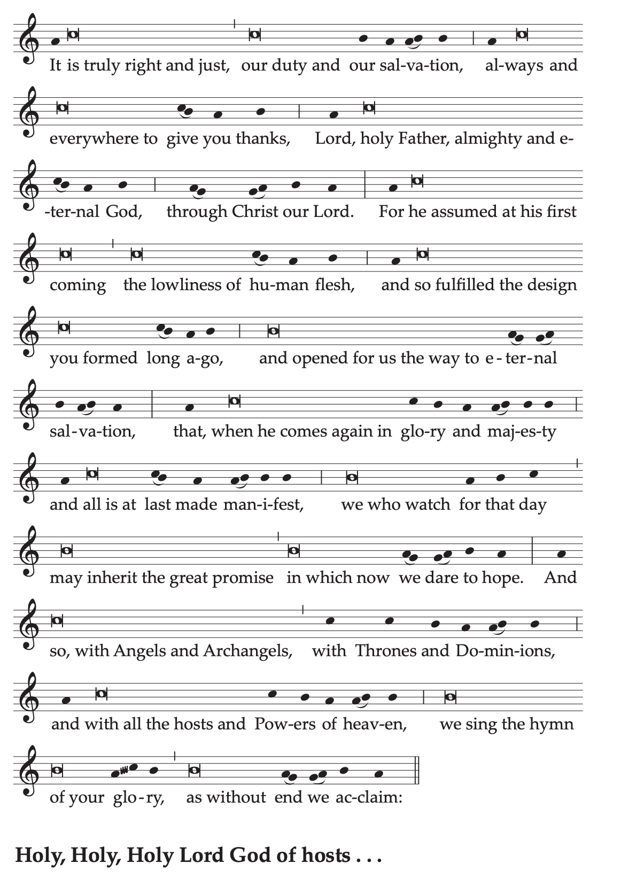
PREFACE II OF ADVENT
The twofold expectation of Christ
34. The following Preface is said in Masses of Advent from December 17 to December 24 and in other Masses that are celebrated in Advent that have no proper Preface.
It is truly right and just, our duty and our salvation,
always and everywhere to give you thanks,
Lord, holy Father, almighty and eternal God,
through Christ our Lord.
For all the oracles of the prophets foretold him,
the Virgin Mother longed for him
with love beyond all telling,
John the Baptist sang of his coming
and proclaimed his presence when he came.
It is by his gift that already we rejoice
at the mystery of his Nativity,
so that he may find us watchful in prayer
and exultant in his praise.
And so, with Angels and Archangels,
with Thrones and Dominions,
and with all the hosts and Powers of heaven,
we sing the hymn of your glory,
as without end we acclaim:
Holy, Holy, Holy Lord God of Hosts...
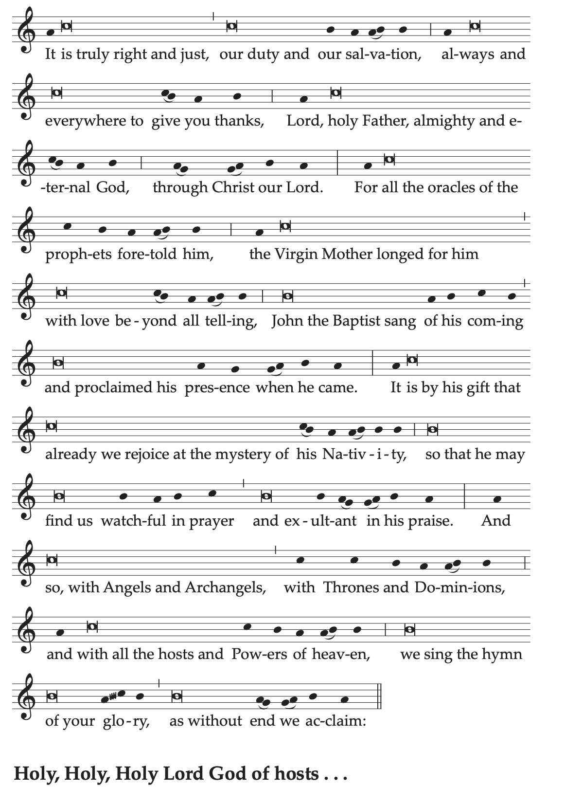
PREFACES OF THE NATIVITY:
Preface I of the Nativity: Christ the Light
Preface II of the Nativity: The restoration of all things in the Incarnation
Preface III of the Nativity: The exchange in the Incarnation of the Word
PREFACE I OF THE NATIVITY OF THE LORD
Christ the Light
35. The following Preface is said in Masses of the Nativity of the Lord and of its Octave Day, and within the Octave, even in Masses that otherwise might have a proper Preface, with the exception of Masses that have a proper Preface concerning the divine mysteries or divine Persons. It is also used on weekdays of Christmas Time.
It is truly right and just, our duty and our salvation,
always and everywhere to give you thanks,
Lord, holy Father, almighty and eternal God,
through Christ our Lord.
For in the mystery of the Word made flesh
a new light of your glory has shone upon the eyes of our mind,
so that, as we recognize in him God made visible,
we may be caught up through him in love of things invisible.
And so, with Angels and Archangels,
with Thrones and Dominions,
and with all the hosts and Powers of heaven,
we sing the hymn of your glory,
as without end we acclaim:
Holy, Holy, Holy Lord God of Hosts...
When the Roman Canon is used, there is a proper Communicantes. At the Vigil Mass and the Mass during the Night of the Nativity of the Lord: Celebrating the most sacred night, etc., is said, while Celebrating the most sacred day, etc., is then said throughout the Octave of the Nativity of the Lord.
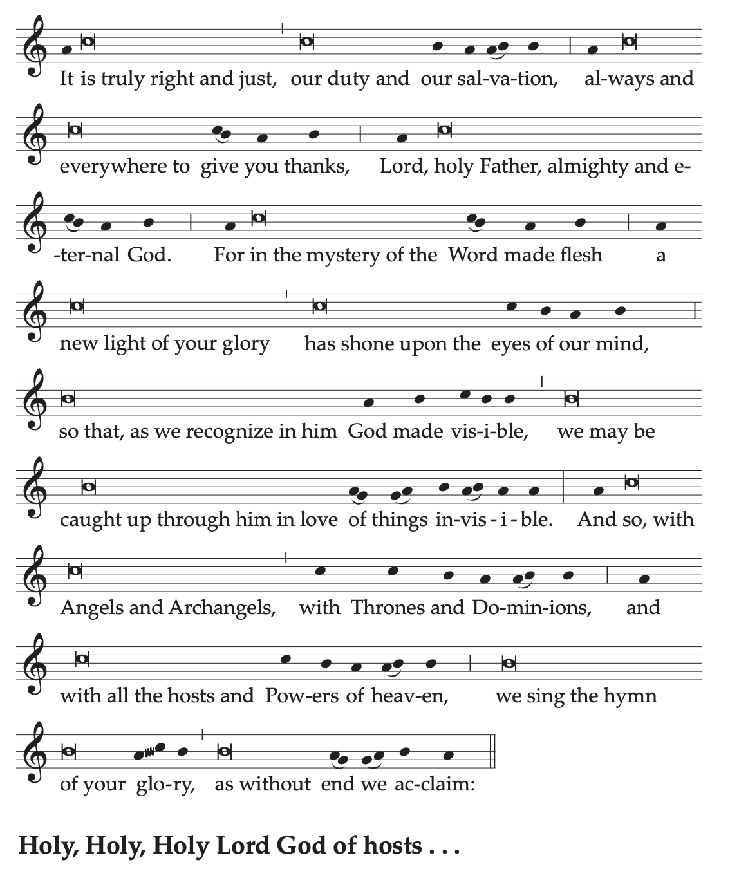
PREFACE II OF THE NATIVITY OF THE LORD
The restoration of all things in the Incarnation
36. The following Preface is said in Masses of the Nativity of the Lord and of its Octave Day, and within the Octave, even in Masses that otherwise might have a proper Preface, with the exception of Masses that have a proper Preface concerning the divine mysteries or divine Persons. It is also used on weekdays of Christmas Time.
It is truly right and just, our duty and our salvation,
always and everywhere to give you thanks,
Lord, holy Father, almighty and eternal God,
through Christ our Lord.
For on the feast of his awe-filled mystery,
though invisible in his own divine nature,
he has appeared visibly in ours;
and begotten before all ages,
he has begun to exist in time;
so that, raising up in himself all that was cast down,
he might restore unity to all creation
and call straying humanity back to the heavenly Kingdom.
And so, with all the Angels, we praise you,
as in joyful celebration we acclaim:
Holy, Holy, Holy Lord God of Hosts...
When the Roman Canon is used, there is a proper Communicantes. At the Vigil Mass and the Mass during the Night of the Nativity of the Lord: Celebrating the most sacred night, etc., is said, while Celebrating the most sacred day, etc., is then said throughout the Octave of the Nativity of the Lord.
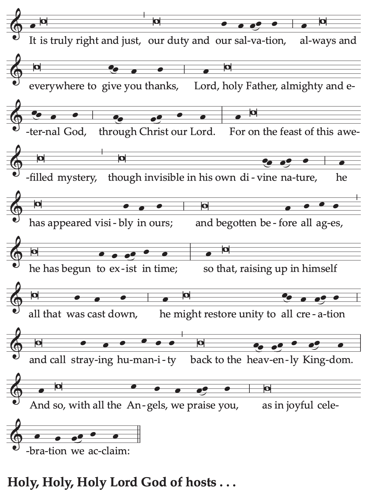
PREFACE III OF THE NATIVITY OF THE LORD
The exchange in the Incarnation of the Word
37. The following Preface is said in Masses of the Nativity of the Lord and of its Octave Day, and within the Octave, even in Masses that otherwise might have a proper Preface, with the exception of Masses that have a proper Preface concerning the divine mysteries or divine Persons. It is also used on weekdays of Christmas Time.
It is truly right and just, our duty and our salvation,
always and everywhere to give you thanks,
Lord, holy Father, almighty and eternal God,
through Christ our Lord.
For through him the holy exchange that restores our life
has shone forth today in splendour:
when our frailty is assumed by your word
not only does human mortality receive unending honor
but by this wondrous union we, too, are made eternal.
And so, in company with the choirs of Angels,
we praise you, and with joy we proclaim:
Holy, Holy, Holy Lord God of Hosts...
When the Roman Canon is used, there is a proper Communicantes. At the Vigil Mass and the Mass during the Night of the Nativity of the Lord: Celebrating the most sacred night, etc., is said, while Celebrating the most sacred day, etc., is then said throughout the Octave of the Nativity of the Lord.
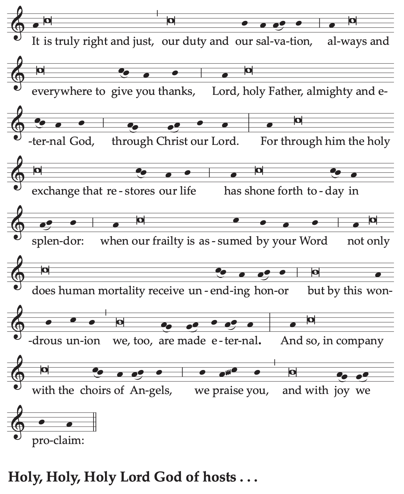
PREFACE OF THE EPIPHANY OF THE LORD
Christ the light of the nations
38. The following Preface is said in Masses of the Solemnity of the Epiphany. This Preface, or one of the Prefaces of the Nativity, may be said even on days after the Epiphany up to the Saturday that precedes the Feast of the Baptism of the Lord.
It is truly right and just, our duty and our salvation,
always and everywhere to give you thanks,
Lord, holy Father, almighty and eternal God.
For today you have revealed the mystery
of our salvation in Christ
as a light for the nations,
and, when he appeared in our mortal nature,
you made us new by the glory of his immortal nature.
And so, with Angels and Archangels,
with Thrones and Dominions,
and with all the hosts and Powers of heaven,
we sing the hymn of your glory,
as without end we acclaim:
Holy, Holy, Holy Lord God of Hosts...
When the Roman Canon is used on the Solemnity of the Epiphany, there is a proper Communicantes.
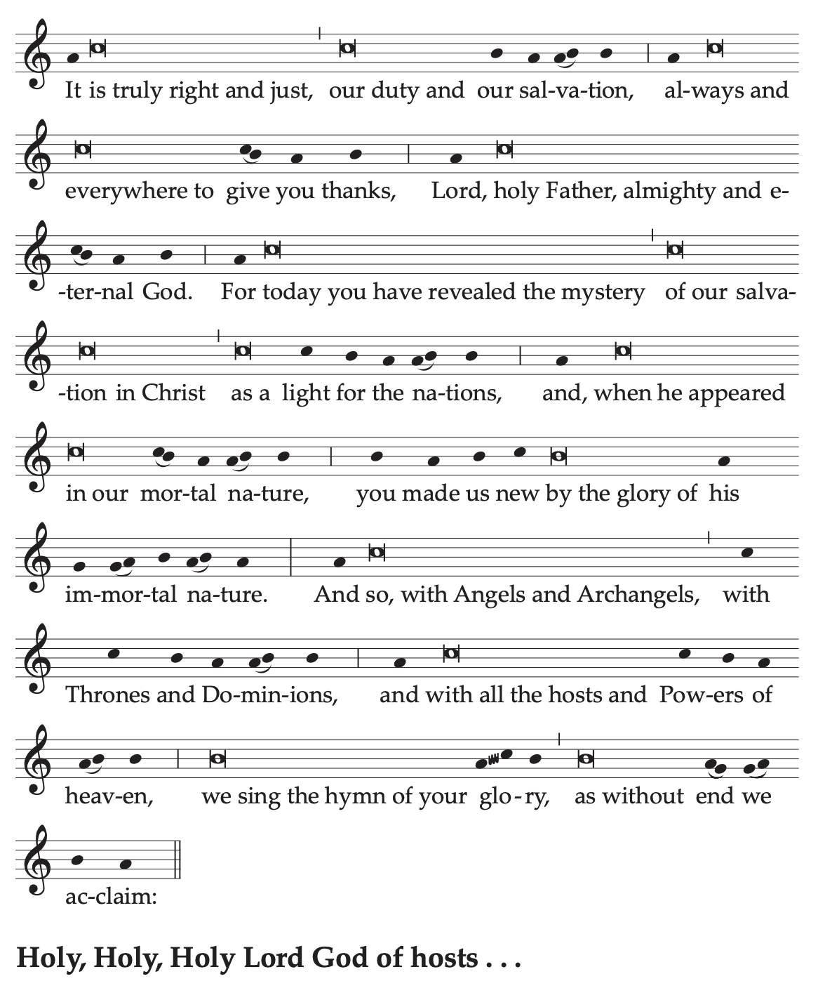
PREFACES OF LENT:
Preface I of Lent: The spiritual meaning of Lent
Preface II of Lent: Spiritual penance
Preface III of Lent: The fruits of abstinence
Preface IV of Lent: The fruits of fasting
PREFACE I OF LENT
The spiritual meaning of Lent
39. The following Preface is said in Masses of Lent, especially on Sundays when a more specific Preface is not prescribed.
It is truly right and just, our duty and our salvation,
always and everywhere to give you thanks,
Lord, holy Father, almighty and eternal God,
through Christ our Lord.
For by your gracious gift each year
your faithful await the sacred paschal feasts
with the joy of minds made pure,
so that, more eagerly intent on prayer
and on the works of charity,
and participating in the mysteries
by which they have been reborn,
they may be led to the fullness of grace
that you bestow on your sons and daughters.
And so, with Angels and Archangels,
with Thrones and Dominions,
and with all the hosts and Powers of heaven,
we sing the hymn of your glory,
as without end we acclaim:
Holy, Holy, Holy Lord God of Hosts...
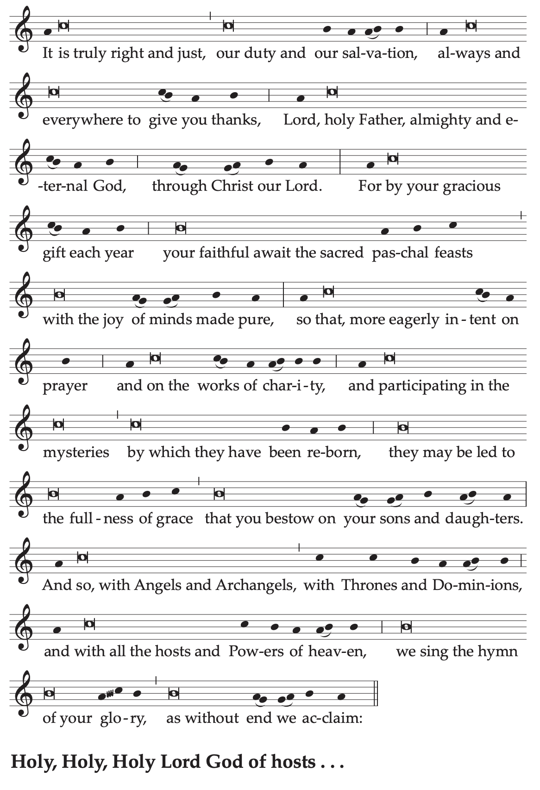
PREFACE II OF LENT
Spiritual penance
40. The following Preface is said in Masses of Lent, especially on Sundays when a more specific Preface is not prescribed.
It is truly right and just, our duty and our salvation,
always and everywhere to give you thanks,
Lord, holy Father, almighty and eternal God.
For you have given your children a sacred time
for the renewing and purifying of their hearts,
that, freed from disordered affections,
they may so deal with the things of this passing world
as to hold rather to the things that eternally endure.
And so, with all the Angels and Saints,
we praise you, as without end we acclaim:
Holy, Holy, Holy Lord God of Hosts...
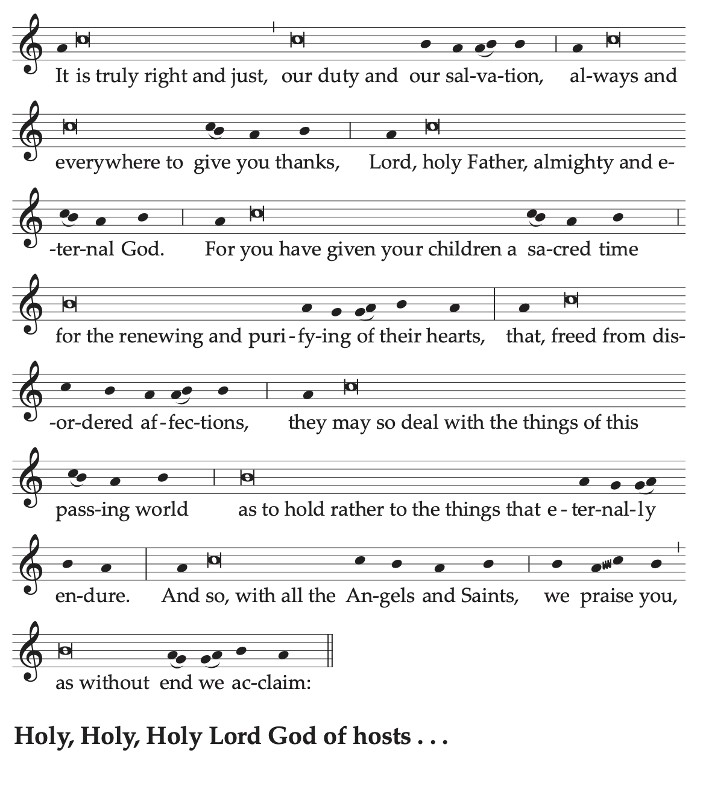
PREFACE III OF LENT
The fruits of abstinence
41. The following Preface is said in Masses of the weekdays of Lent and on days of fasting.
It is truly right and just, our duty and our salvation,
always and everywhere to give you thanks,
Lord, holy Father, almighty and eternal God.
For you will that our self-denial should give you thanks,
humble our sinful pride,
contribute to the feeding of the poor,
and so help us to imitate you in your kindness.
And so we glorify you with countless Angels,
as with one voice we acclaim:
Holy, Holy, Holy Lord God of Hosts...
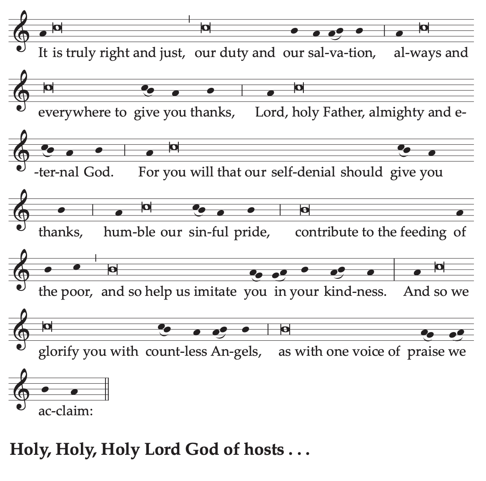
PREFACE IV OF LENT
The fruits of fasting
42. The following Preface is said in Masses of the weekdays of Lent and on days of fasting.
It is truly right and just, our duty and our salvation,
always and everywhere to give you thanks,
Lord, holy Father, almighty and eternal God.
For through bodily fasting you restrain our faults,
raise up our minds,
and bestow both virtue and its rewards,
through Christ our Lord.
Through him the Angels praise your majesty,
Dominions adore and Powers tremble before you.
Heaven and the Virtues of heaven and the blessed Seraphim
worship together with exultation.
May our voices, we pray, join with theirs
in humble praise, as we acclaim:
Holy, Holy, Holy Lord God of Hosts...
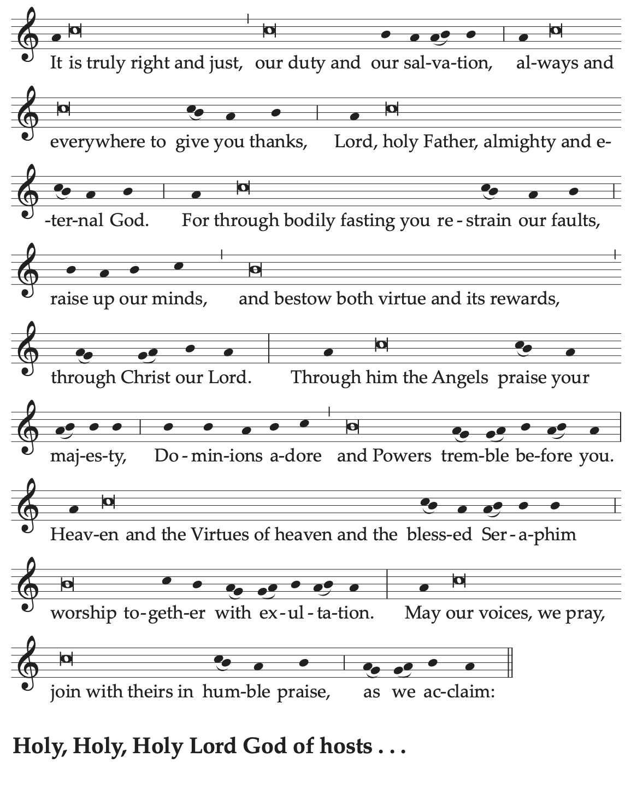
PREFACES OF THE PASSION OF THE LORD:
Preface I of the Passion: The power of the Cross
Preface II of the Passion: The victory of the Passion
PREFACE I OF THE PASSION OF THE LORD
The power of the Cross
43. The following Preface is said during the Fifth Week of Lent and in Masses of the mysteries of the Cross and Passion of the Lord.
It is truly right and just, our duty and our salvation,
always and everywhere to give you thanks,
Lord, holy Father, almighty and eternal God.
For through the saving Passion of your Son
the whole world has received a heart
to confess the infinite power of your majesty,
since by the wondrous power of the Cross
your judgment on the world is now revealed
and the authority of Christ crucified.
And so, Lord, with all the Angels and Saints,
we, too, give you thanks, as in exultation we acclaim:
Holy, Holy, Holy Lord God of Hosts...
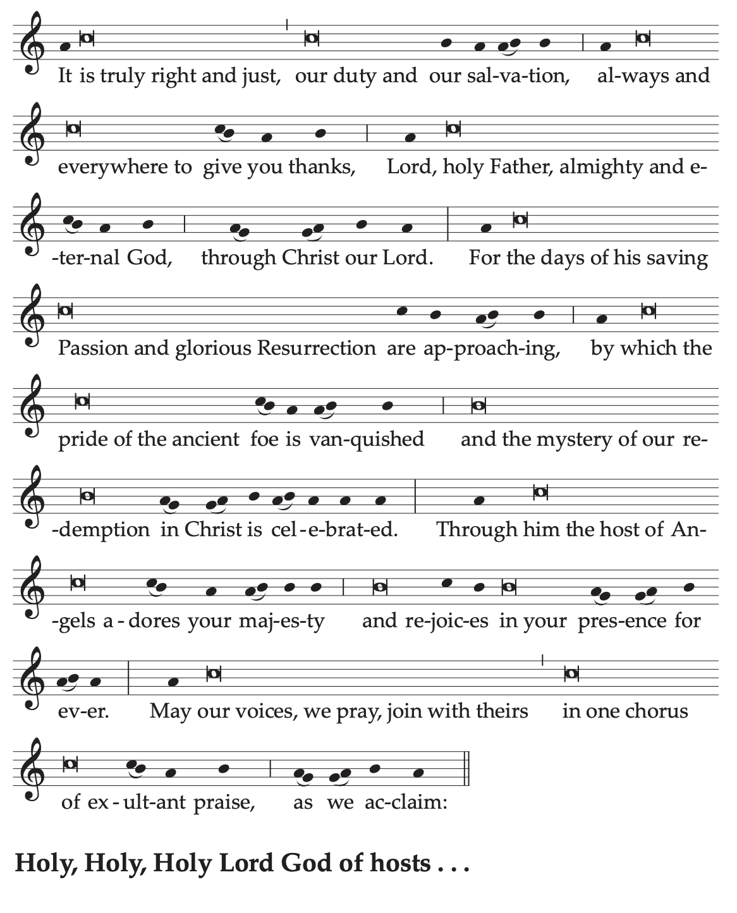
PREFACE II OF THE PASSION OF THE LORD
The victory of the Passion
44. The following Preface is said on Monday, Tuesday, and Wednesday of Holy Week.
It is truly right and just, our duty and our salvation,
always and everywhere to give you thanks,
Lord, holy Father, almighty and eternal God,
through Christ our Lord.
For the days of his saving Passion
and glorious Resurrection are approaching,
by which the pride of the ancient foe is vanquished
and the mystery of our redemption is celebrated.
Through him the host of Angels adores your majesty
and rejoices in your presence for ever.
May our voices, we pray, join with theirs
in one chorus of exultant praise, as we acclaim:
Holy, Holy, Holy Lord God of Hosts...
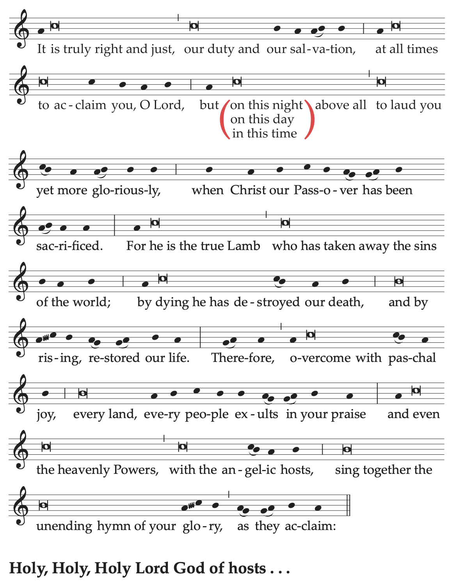
PREFACES OF EASTER:
Preface I of Easter: The Paschal Mystery
Preface II of Easter: New life in Christ
Preface III of Easter: Christ living and always interceding for us
Preface IV of Easter: The restoration of the universe through the Paschal Mystery
Preface V of Easter: Christ, Priest and Victim
PREFACE I OF EASTER
The Paschal Mystery
45. The following Preface is said during Easter time.
At the Easter Vigil, is said on this night; on Easter Sunday and throughout the Octave of Easter, is said on this day; on other days of Easter Time, is said in this time.
It is truly right and just, our duty and our salvation,
at all times to acclaim you, O Lord,
but (on this night / on this day / in this time) above all
to laud you yet more gloriously
when Christ our Passover has been sacrificed.
For he is the true Lamb
who has taken away the sins of the world;
by dying, he has destroyed our death,
and by rising restored our life.
Therefore, overcome with paschal joy,
every land, every people exults in your praise
and even the heavenly Powers, with the angelic hosts,
sing together the unending hymn of your glory,
as they acclaim:
Holy, Holy, Holy Lord God of Hosts...
When the Roman Canon is used, there is a proper Communicantes and a proper Hanc Igitur, as below. In the Communicantes at the Easter Vigil, Celebrating the most sacred night, etc. is said.
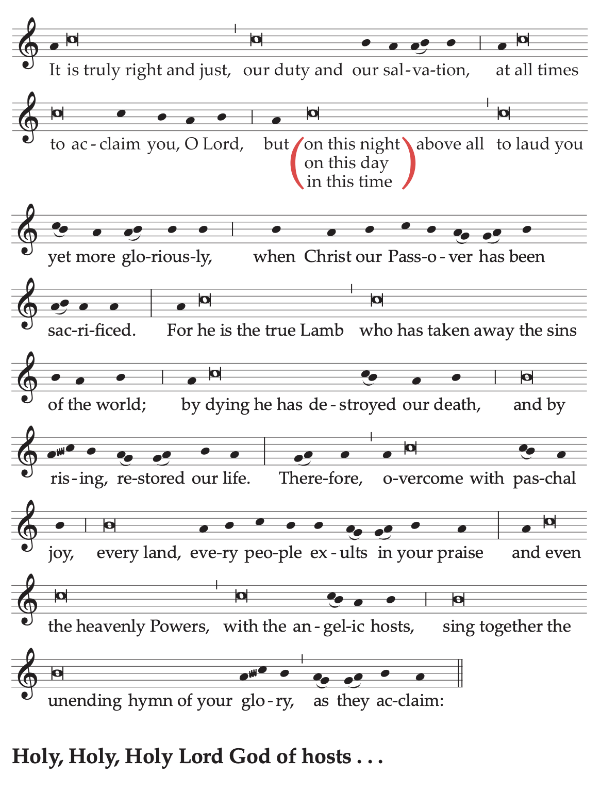
PREFACE II OF EASTER
New life in Christ
46. The following Preface is said during Easter Time.
It is truly right and just, our duty and our salvation,
at all times to acclaim you, O Lord,
but in this time above all to laud you yet more gloriously,
when Christ our Passover has been sacrificed.
Through him the children of light rise to eternal life
and the halls of the heavenly Kingdom
are thrown open to the faithful;
for his Death is our ransom from death,
and in his rising the life of all has risen.
Therefore, overcome with paschal joy,
every land, every people exults in your praise
and even the heavenly Powers, with the angelic hosts,
sing together the unending hymn of your glory,
as they acclaim:
Holy, Holy, Holy Lord God of Hosts...
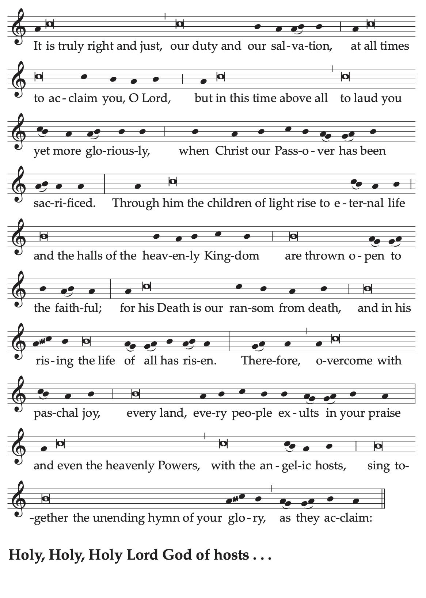
PREFACE III OF EASTER
Christ living and always interceding for us
47. The following Preface is said during Easter Time.
It is truly right and just, our duty and our salvation,
at all times to acclaim you, O Lord,
but in this time above all to laud you yet more gloriously,
when Christ our Passover has been sacrificed.
He never ceases to offer himself for us
but defends us and ever pleads our cause before you:
he is the sacrificial Victim who dies no more,
the Lamb, once slain, who lives for ever.
Therefore, overcome with paschal joy,
every land, every people exults in your praise
and even the heavenly Powers, with the angelic hosts,
sing together the unending hymn of your glory,
as they acclaim:
Holy, Holy, Holy Lord God of Hosts...
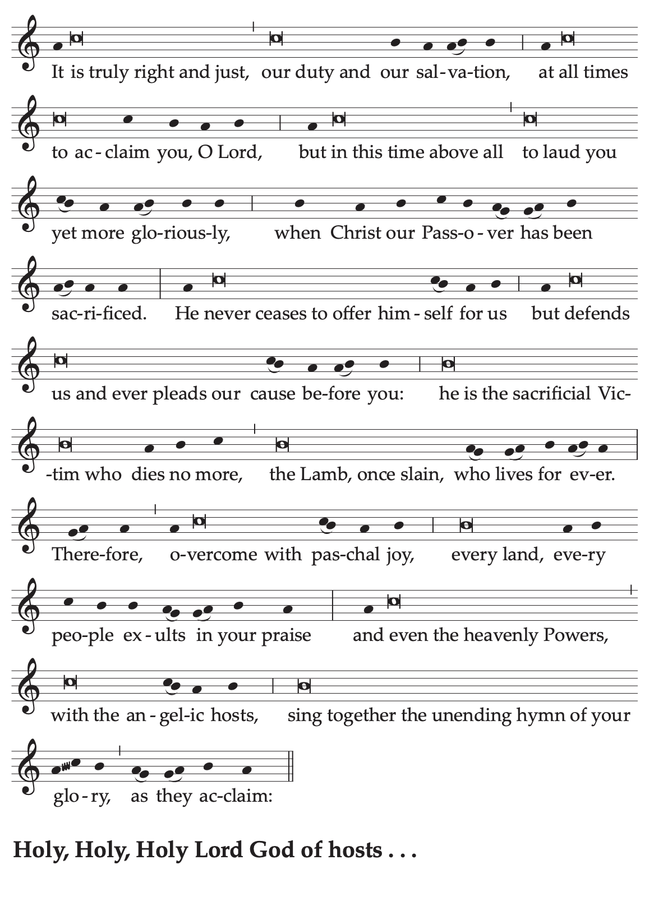
PREFACE IV OF EASTER
The restoration of the universe through the Paschal Mystery
48. The following Preface is said during Easter Time.
It is truly right and just, our duty and our salvation,
at all times to acclaim you, O Lord,
but in this time above all to laud you yet more gloriously,
when Christ our Passover has been sacrificed.
For, with the old order destroyed,
a universe cast down is renewed,
and integrity of life is restored to us in Christ.
Therefore, overcome with paschal joy,
every land, every people exults in your praise
and even the heavenly Powers, with the angelic hosts,
sing together the unending hymn of your glory,
as they acclaim:
Holy, Holy, Holy Lord God of Hosts...
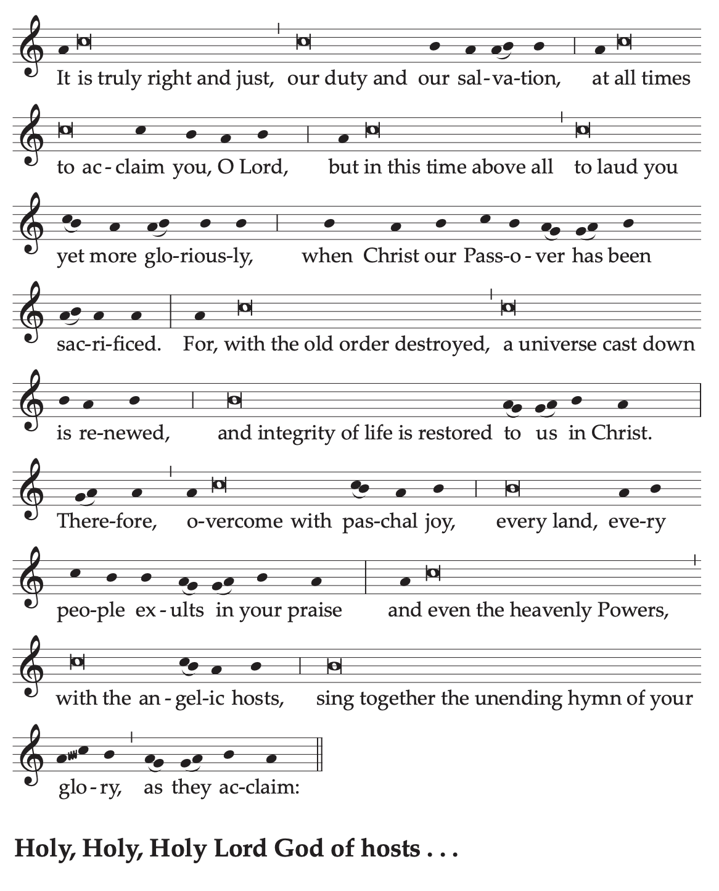
PREFACE V OF EASTER
Christ, Priest and Victim
49. InstructionsInstructions
It is truly right and just, our duty and our salvation,
at all times to acclaim you, O Lord,
but in this time above all to laud you yet more gloriously,
when Christ our Passover has been sacrificed.
By the oblation of his Body,
he brought the sacrifices of old to fulfillment
in the reality of the Cross
and, by commending himself to you for our salvation,
showed himself the Priest, the Altar, and the Lamb of sacrifice.
Therefore, overcome with paschal joy,
every land, every people exults in your praise
and even the heavenly Powers, with the angelic hosts,
sing together the unending hymn of your glory,
as they acclaim:
Holy, Holy, Holy Lord God of Hosts...
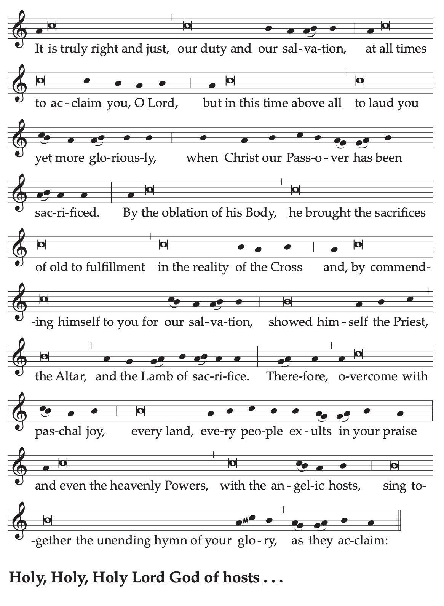
PREFACES OF THE ASCENSION OF THE LORD:
Preface I of the Ascension: The mystery of the Ascension
Preface II of the Ascension: The mystery of the Ascension
PREFACE I OF THE ASCENSION OF THE LORD
The mystery of the Ascension
50. The following Preface is said on the day of the Ascension of the Lord. It may be said on the days between the Ascension and Pentecost in all Masses that have no proper Preface.
It is truly right and just, our duty and our salvation,
always and everywhere to give you thanks,
Lord, holy Father, almighty and eternal God.
For the Lord Jesus, the king of glory,
conqueror of sin and death,
ascended (today) to the highest heavens,
as the Angels gazed in wonder.
Mediator between God and man,
judge of the world and Lord of hosts,
he ascended, not to distance himself from our lowly state
but that we, his members, might be confident of following
where he, our Head and Founder, has gone before.
Therefore, overcome with paschal joy,
every land, every people exults in your praise
and even the heavenly Powers, with the angelic hosts,
sing together the unending hymn of your glory,
as they acclaim:
Holy, Holy, Holy Lord God of Hosts...
When the Roman Canon is used on the Ascension, there is a proper Communicantes.
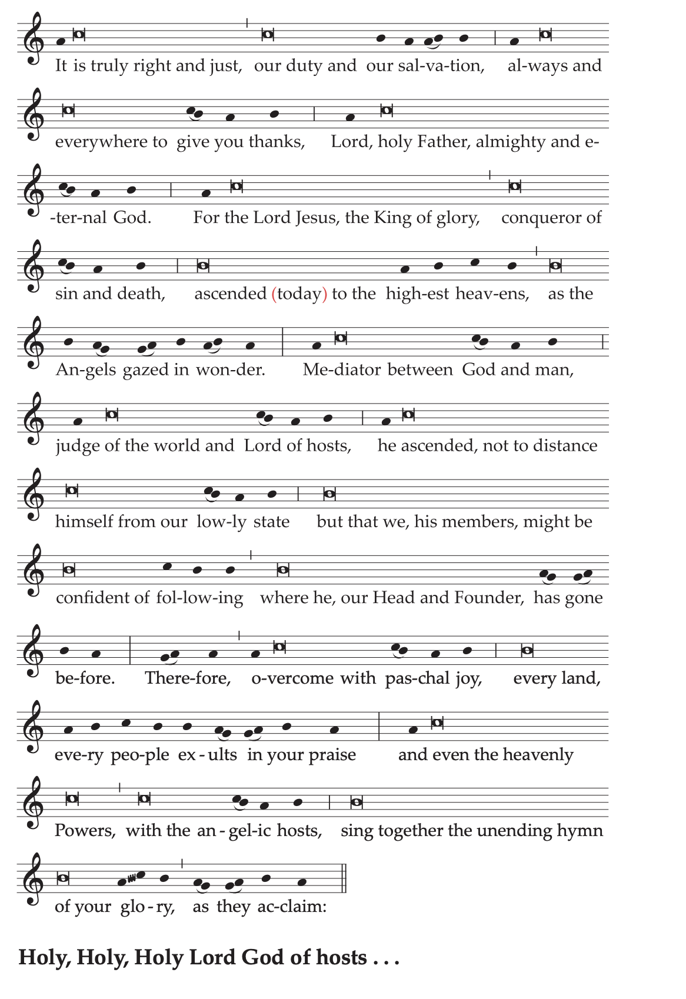
PREFACE II OF THE ASCENSION OF THE LORD
The mystery of the Ascension
51. The following Preface is said on the day of the Ascension of the Lord. It may also be said on the days between the Ascension and Pentecost in all Masses that have no proper Preface.
It is truly right and just, our duty and our salvation,
always and everywhere to give you thanks,
Lord, holy Father, almighty and eternal God,
through Christ our Lord.
For after his Resurrection
he plainly appeared to all his disciples
and was taken up to heaven in their sight,
that he might make us sharers in his divinity.
Therefore, overcome with paschal joy,
every land, every people exults in your praise
and even the heavenly Powers, with the angelic hosts,
sing together the unending hymn of your glory,
as they acclaim:
Holy, Holy, Holy Lord God of Hosts...
When the Roman Canon is used on the Ascension, there is a proper Communicantes.
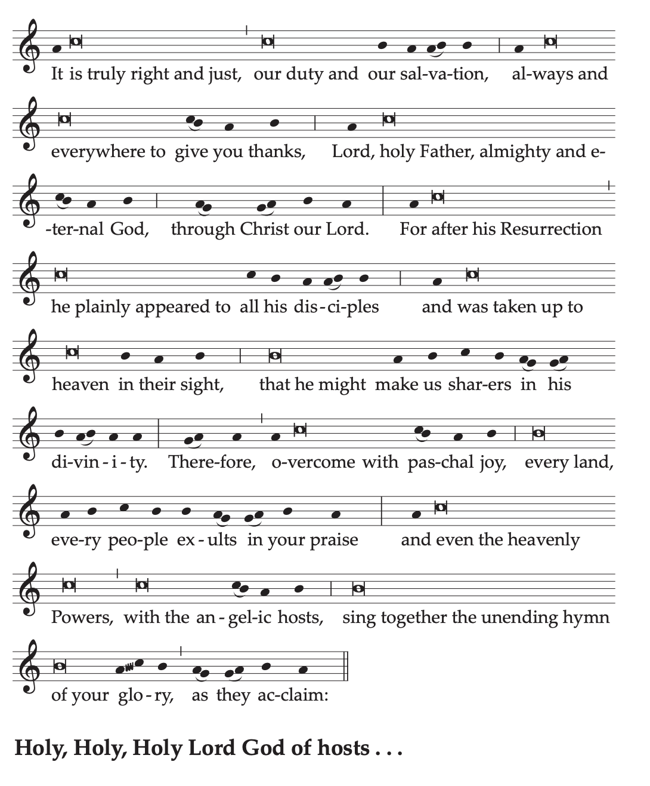
PREFACES OF THE SUNDAYS IN ORDINARY TIME:
Preface I of the Sundays in OT: The Paschal Mystery and the People of God
Preface II of the Sundays in OT: The mystery of salvation
Preface III of the Sundays in OT: The salvation of man by a man
Preface IV of the Sundays in OT: The history of salvation
Preface V of the Sundays in OT: Creation
Preface VI of the Sundays in OT: The pledge of the eternal Passover
Preface VII of the Sundays in OT: Salvation through the obedience of Christ
Preface VIII of the Sundays in OT: The Church united by the unity of the Trinity
PREFACE I OF THE SUNDAYS IN ORDINARY TIME
The Paschal Mystery and the People of God
52. The following Preface is said on Sundays in Ordinary Time.
It is truly right and just, our duty and our salvation,
always and everywhere to give you thanks,
Lord, holy Father, almighty and eternal God,
through Christ our Lord.
For through his Paschal Mystery,
he accomplished the marvelous deed,
by which he has freed us from the yoke of sin and death,
summoning us to the glory of being now called
a chosen race, a royal priesthood,
a holy nation, a people for your own possession,
to proclaim everywhere your mighty works,
for you have called us out of darkness
into your own wonderful light.
And so, with Angels and Archangels,
with Thrones and Dominions,
and with all the hosts and Powers of heaven,
we sing the hymn of your glory,
as without end we acclaim:
Holy, Holy, Holy Lord God of Hosts...
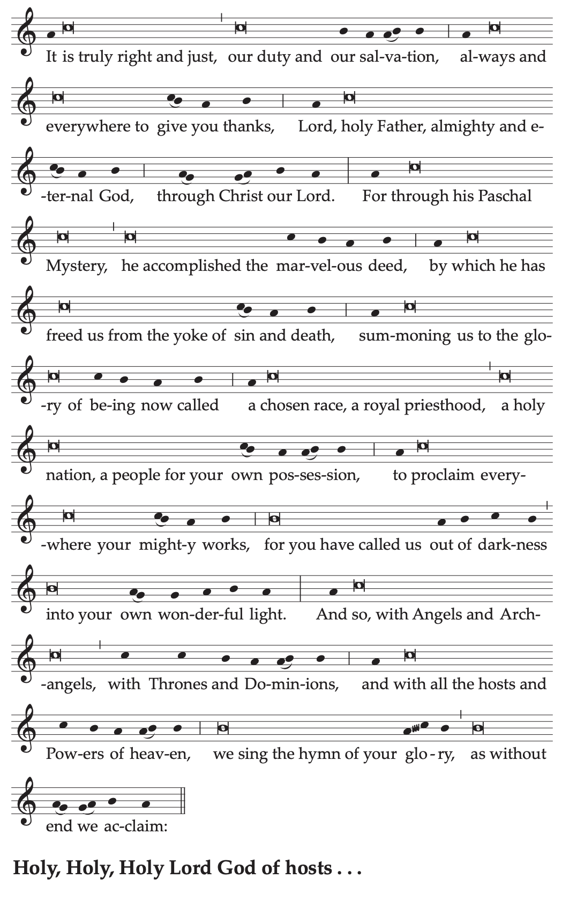
PREFACE II OF THE SUNDAYS IN ORDINARY TIME
The mystery of salvation
53. The following Preface is said on Sundays in Ordinary Time.
It is truly right and just, our duty and our salvation,
always and everywhere to give you thanks,
Lord, holy Father, almighty and eternal God,
through Christ our Lord.
For out of compassion for the waywardness that is ours,
he humbled himself and was born of the Virgin;
by the passion of the Cross he freed us from unending death,
and by rising from the dead he gave us life eternal.
And so, with Angels and Archangels,
with Thrones and Dominions,
and with all the hosts and Powers of heaven,
we sing the hymn of your glory,
as without end we acclaim:
Holy, Holy, Holy Lord God of Hosts...
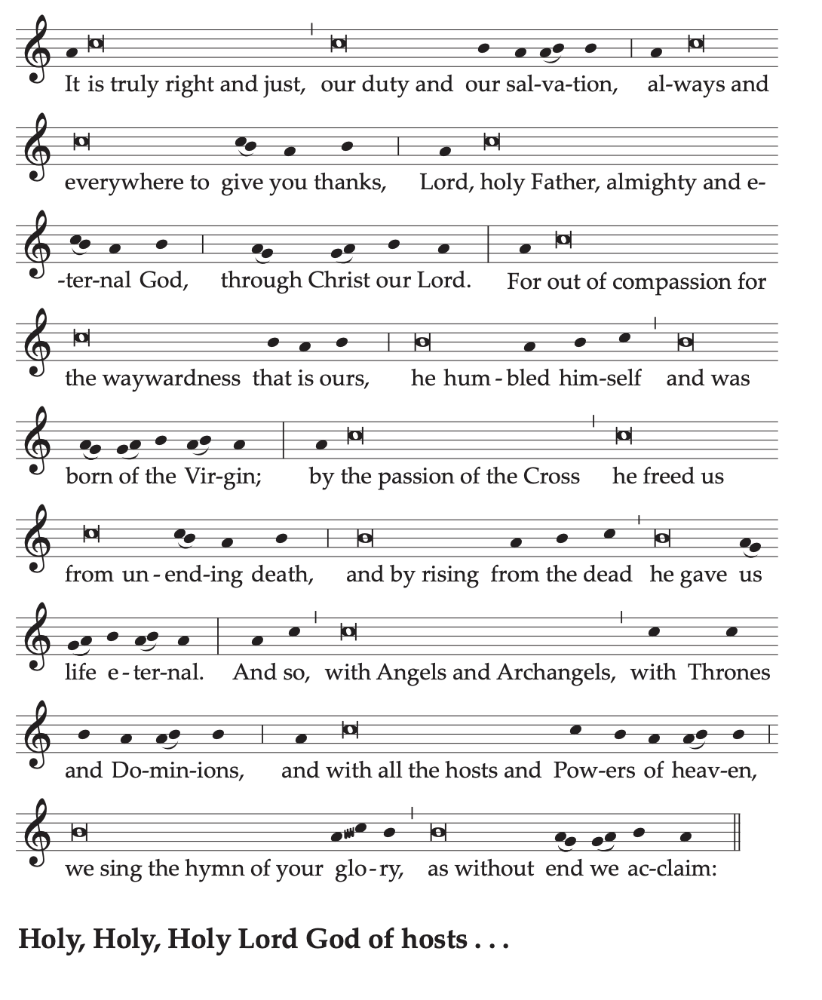
PREFACE III OF THE SUNDAYS IN ORDINARY TIME
The salvation of man by a man
54. The following Preface is said on Sundays in Ordinary Time.
It is truly right and just, our duty and our salvation,
always and everywhere to give you thanks,
Lord, holy Father, almighty and eternal God.
For we know it belongs to your boundless glory,
that you came to the aid of mortal beings with your divinity
and even fashioned for us a remedy out of mortality itself,
that the cause of our downfall
might become the means of our salvation,
through Christ our Lord.
Through him the host of Angels adores your majesty
and rejoices in your presence for ever.
May our voices, we pray, join with theirs
in one chorus of exultant praise, as we acclaim:
Holy, Holy, Holy Lord God of Hosts...
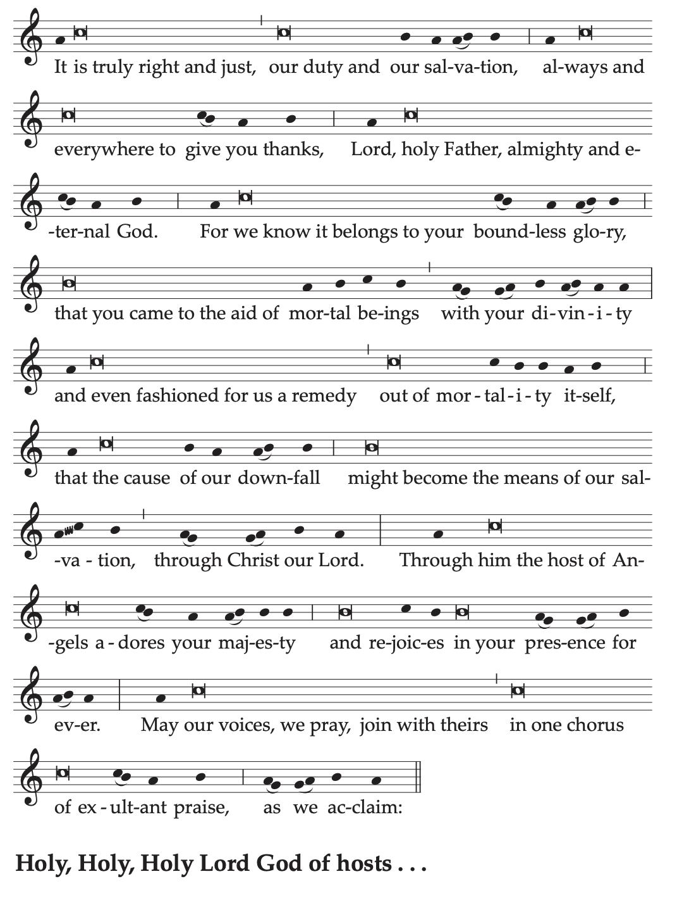
PREFACE IV OF THE SUNDAYS IN ORDINARY TIME
The history of salvation
55. The following Preface is said on Sundays in Ordinary Time.
It is truly right and just, our duty and our salvation,
always and everywhere to give you thanks,
Lord, holy Father, almighty and eternal God,
through Christ our Lord.
For by his birth he brought renewal
to humanity’s fallen state,
and by his suffering, canceled out our sins;
by his rising from the dead
he opened the way to eternal life,
and by ascending to you, O Father,
he has unlocked the gates of heaven.
And so, with the company of Angels and Saints,
we sing the hymn of your praise,
as without end we acclaim:
Holy, Holy, Holy Lord God of Hosts...
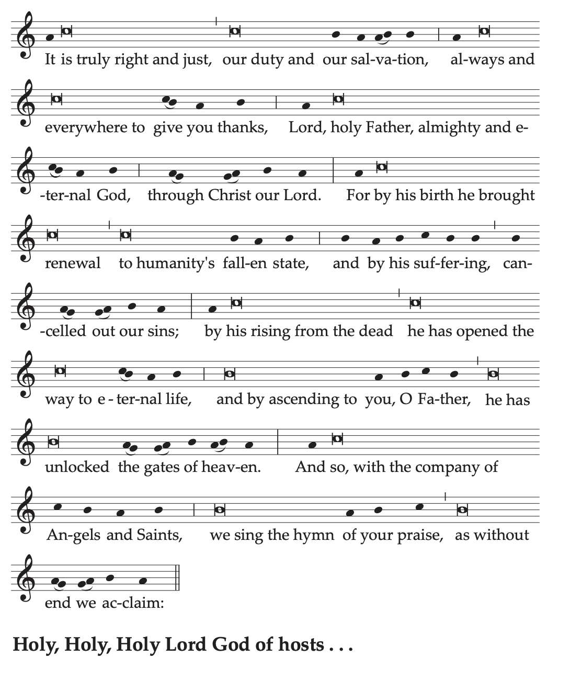
PREFACE V OF THE SUNDAYS IN ORDINARY TIME
Creation
56. The following Preface is said on Sundays in Ordinary Time.
It is truly right and just, our duty and our salvation,
always and everywhere to give you thanks,
Lord, holy Father, almighty and eternal God.
For you laid the foundations of the world
and have arranged for the changing of times and seasons;
you have formed man in your own image
and set humanity over the whole world in all its wonder,
to rule in your name over all you have made
and for ever praise you in your mighty works,
through Christ our Lord.
And so, with all the Angels, we praise you,
as in joyful celebration we acclaim:
Holy, Holy, Holy Lord God of Hosts...
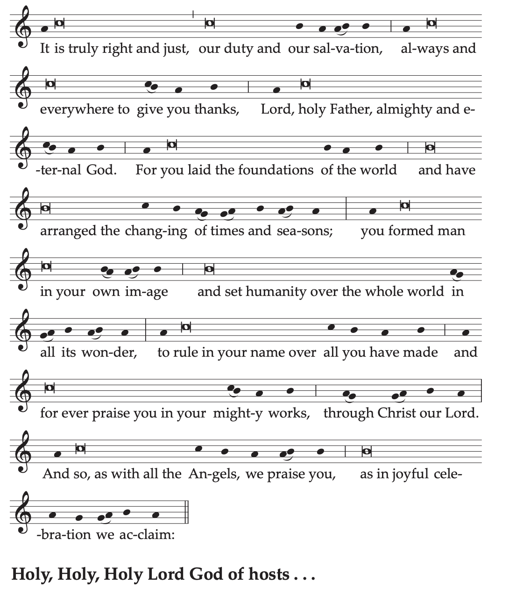
PREFACE VI OF THE SUNDAYS IN ORDINARY TIME
The pledge of the eternal Passover
57. The following Preface is said on Sundays in Ordinary Time.
It is truly right and just, our duty and our salvation,
always and everywhere to give you thanks,
Lord, holy Father, almighty and eternal God,
through Christ our Lord.
For in you we live and move and have our being,
and while in this body
we not only experience the daily effects of your care,
but even now possess the pledge of life eternal.
For, having received the first fruits of the Spirit,
through whom you raised up Jesus from the dead,
we hope for an everlasting share in the Paschal Mystery.
And so, with all the Angels, we praise you,
as in joyful celebration we acclaim:
Holy, Holy, Holy Lord God of Hosts...
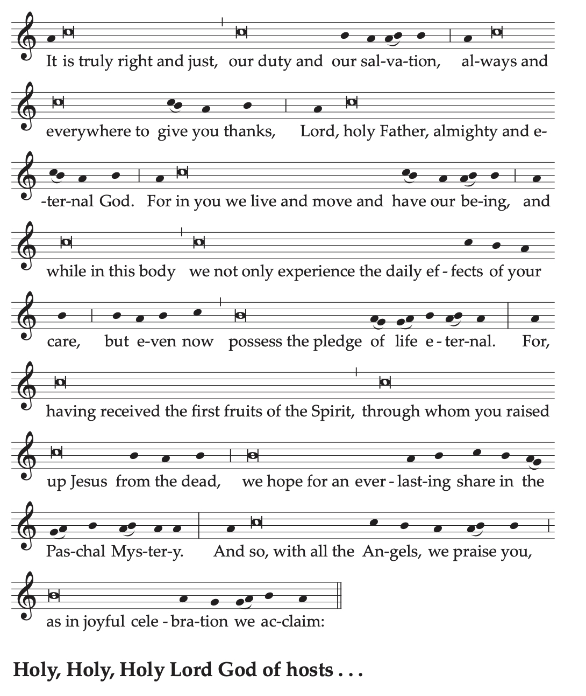
PREFACE VII OF THE SUNDAYS IN ORDINARY TIME
Salvation through the obedience of Christ
58. The following Preface is said on Sundays in Ordinary Time.
It is truly right and just, our duty and our salvation,
always and everywhere to give you thanks,
Lord, holy Father, almighty and eternal God.
For you so loved the world
that in your mercy you sent us the Redeemer,
to live like us in all things but sin,
so that you might love in us what you loved in your Son,
by whose obedience we have been restored to those gifts of yours
that, by sinning, we had lost in disobedience.
And so, Lord, with all the Angels and Saints,
we, too, give you thanks, as in exultation we acclaim:
Holy, Holy, Holy Lord God of Hosts...
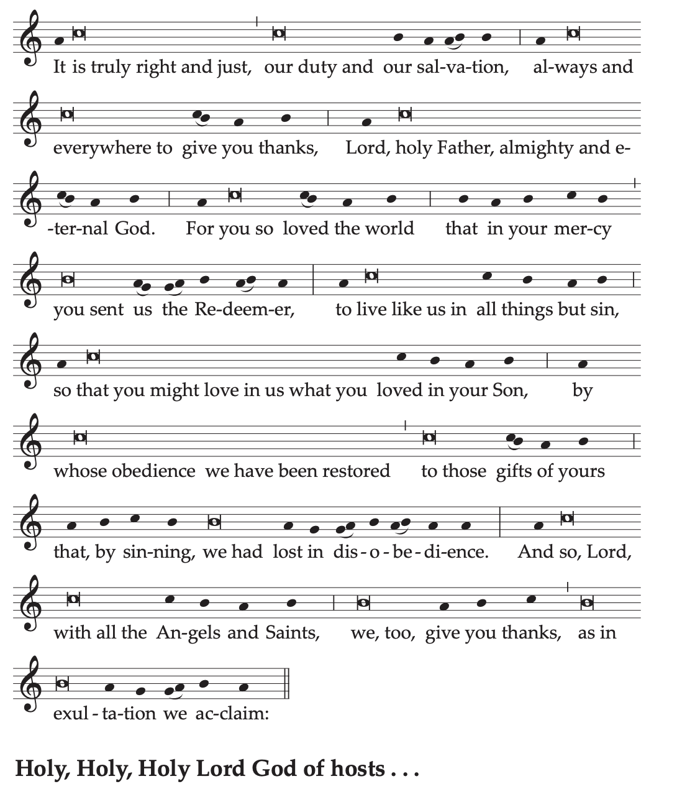
PREFACE VIII OF THE SUNDAYS IN ORDINARY TIME
The Church united by the unity of the Trinity
59. The following Preface is said on Sundays in Ordinary Time.
It is truly right and just, our duty and our salvation,
always and everywhere to give you thanks,
Lord, holy Father, almighty and eternal God,
through Christ our Lord.
For, when your children were scatted afar by sin,
through the Blood of your Son and the power of the Spirit,
you gathered them again to yourself,
that a people, formed as one by the unity of the Trinity,
made the body of Christ and the temple of the Holy Spirit,
might, to the praise of your manifold wisdom,
be manifest as the Church.
And so, in company with the choirs of Angels,
we praise you, and with joy we proclaim:
Holy, Holy, Holy Lord God of Hosts...
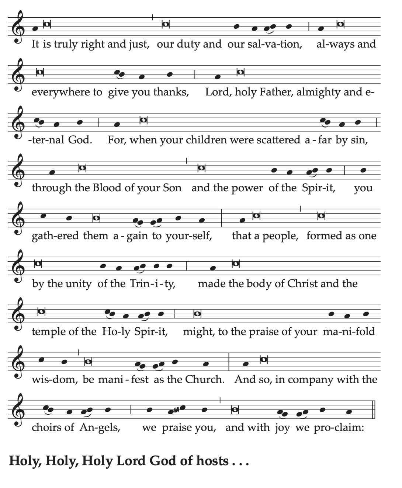
PREFACES OF THE MOST HOLY EUCHARIST:
Preface I of the Most Holy Eucharist: The Sacrifice and the Sacrament of Christ
Preface II of the Most Holy Eucharist: The fruits of the Most Holy Eucharist
PREFACE I OF THE MOST HOLY EUCHARIST
The Sacrifice and the Sacrament of Christ
60. The following Preface is said in the Mass of the Lord’s Supper (text with music). It may also be said on the Solemnity of the Most Holy Body and Blood of Christ (Corpus Christi) and in Votive Masses of the Most Holy Eucharist.
V. The Lord be with you.
R. And with your spirit.
V. Lift up your hearts.
R. We lift them up to the Lord.
V. Let us give thanks to the Lord our God.
R. It is right and just.
It is truly right and just, our duty and our salvation,
always and everywhere to give you thanks,
Lord, holy Father, almighty and eternal God,
through Christ our Lord.
For he is the true and eternal Priest,
who instituted the pattern of an everlasting sacrifice
and was the first to offer himself as the saving Victim,
commanding us to make this offering as his memorial.
As we eat his flesh that was sacrificed for us,
we are made strong,
and, as we drink his Blood that was poured out for us,
we are washed clean.
we are washed clean.
with Thrones and Dominions,
and with all the hosts and Powers of heaven,
we sing the hymn of your glory,
as without end we acclaim:
Holy, Holy, Holy Lord God of Hosts...
When the Roman Canon is used in the Mass of the Lord's Supper, there is a proper Communicantes, Hanc igitur and Qui pridie. For ease of use, the entire Canon has been printed with these incorporated here.
PREFACE II OF THE MOST HOLY EUCHARIST
The fruits of the Most Holy Eucharist
61. The following Preface is said on the Solemnity of the Most Holy Body and Blood of Christ (Corpus Christi) and in Votive Masses of the Most Holy Eucharist (text with music).
V. The Lord be with you.
R. And with your spirit.
V. Lift up your hearts.
R. We lift them up to the Lord.
V. Let us give thanks to the Lord our God.
R. It is right and just.
It is truly right and just, our duty and our salvation,
always and everywhere to give you thanks,
Lord, holy Father, almighty and eternal God,
through Christ our Lord.
For at the Last Supper with his Apostles,
establishing for the ages to come the saving memorial of the Cross,
he offered himself to you as the unblemished Lamb,
the acceptable gift of perfect praise.
Nourishing your faithful by this sacred mystery,
you make them holy, so that the human race,
bounded by one world,
may be enlightened by one faith
and united by one bond of charity.
And so, we approach the table of this wondrous Sacrament,
so that, bathed in the sweetness of your grace,
we may pass over to the heavenly realities here foreshadowed.
Therefore, all creatures of heaven and earth
sing a new song in adoration,
and we, with all the host of Angels,
cry out, and without end we acclaim:
Holy, Holy, Holy Lord God of Hosts...
PREFACES OF THE BLESSED VIRGIN MARY:
Preface I of Mary: The Motherhood of the Blessed Virgin Mary
Preface II of Mary: The Church praises God with the words of Mary
PREFACE I OF THE BLESSED VIRGIN MARY
The Motherhood of the Blessed Virgin Mary
62. The following Preface is said in Masses of the Blessed Virgin Mary, with the mention at the appropriate place of the particular celebration, as indicated in the individual Masses.
It is truly right and just, our duty and our salvation,
always and everywhere to give you thanks,
Lord, holy Father, almighty and eternal God,
and to praise, bless, and glorify your name
(on the Solemnity of the Motherhood /
on the feast day / on the Nativity / in veneration)
of the Blessed ever-Virgin Mary.
For by the overshadowing of the Holy Spirit
she conceived your Only Begotten Son,
and without losing the glory of virginity,
brought forth into the world the eternal Light,
Jesus Christ our Lord.
Through him the Angels praise your majesty,
Dominions adore and Powers tremble before you.
Heaven and the Virtues of heaven and the blessed Seraphim
worship together with exultation.
May our voices, we pray, join with theirs
in humble praise, as we acclaim:
Holy, Holy, Holy Lord God of Hosts...
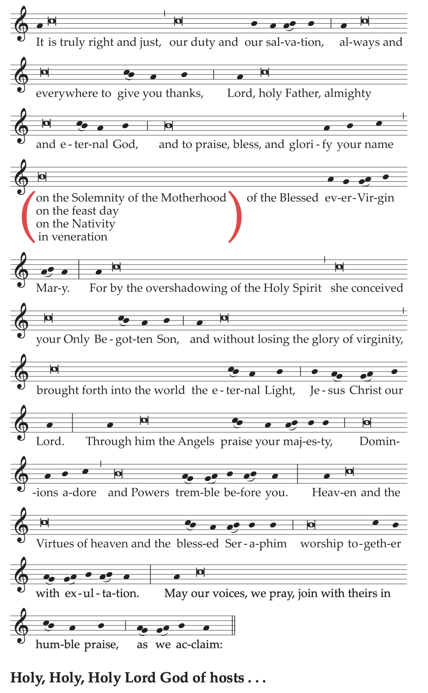
PREFACE II OF THE BLESSED VIRGIN MARY
The Church praises God with the words of Mary
63. The following Preface is said in Masses of the Blessed Virgin Mary.
It is truly right and just, our duty and our salvation,
to praise your mighty deeds in the exaltation of all the Saints,
and especially, as we celebrate the memory of the Blessed Virgin Mary,
to proclaim your kindness as we echo her thankful hymn of praise.
For truly even to earth’s ends you have done great things
and extended your abundant mercy from age to age:
when you looked on the lowliness of your handmaid,
you gave us through her the author of our salvation,
your Son, Jesus Christ, our Lord.
Through him the host of Angels adores your majesty
and rejoices in your presence for ever.
May our voices, we pray, join with theirs
in one chorus of exultant praise, as we acclaim:
Holy, Holy, Holy Lord God of Hosts...
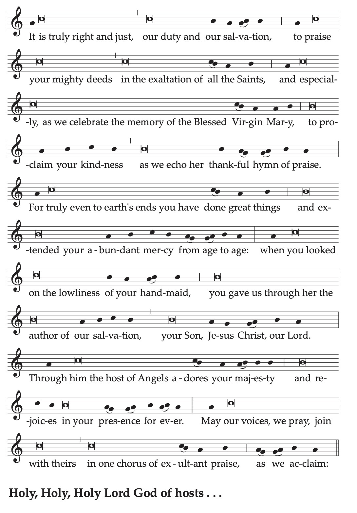
PREFACES OF APOSTLES:
Preface I of Apostles: The Apostles, shepherds of God's people
Preface II of Apostles: The apostolic foundation and witness
PREFACE I OF APOSTLES
The Apostles, shepherds of God's people
64. The following Preface is said in Masses of the Apostles, especially of Saints Peter and Paul.
It is truly right and just, our duty and our salvation,
always and everywhere to give you thanks,
Lord, holy Father, almighty and eternal God.
For you, eternal Shepherd, do not desert your flock,
but through the blessed Apostles
watch over it and protect it always,
so that it may be governed
by those you have appointed shepherds
to lead it in the name of your Son.
And so, with Angels and Archangels,
with Thrones and Dominions,
and with all the hosts and Powers of heaven,
we sing the hymn of your glory,
as without end we acclaim:
Holy, Holy, Holy Lord God of Hosts...
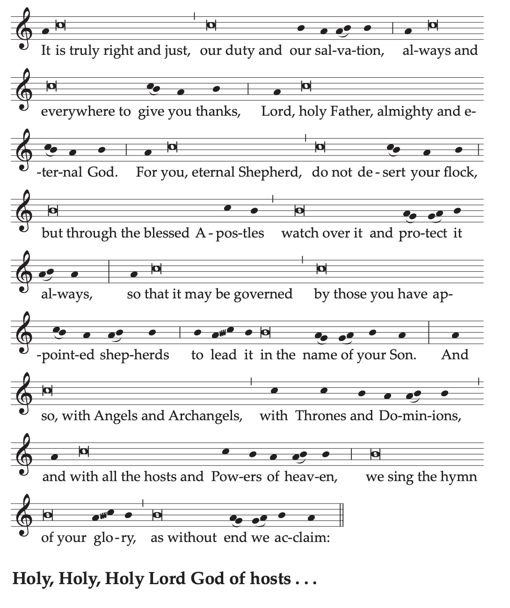
PREFACE II OF APOSTLES
The apostolic foundation and witness.
65. The following Preface is said in Masses of the Apostles and Evangelists.
It is truly right and just, our duty and our salvation,
always and everywhere to give you thanks,
Lord, holy Father, almighty and eternal God,
through Christ our Lord.
For you have built your Church
to stand firm on apostolic foundations,
to be a lasting sign of your holiness on earth
and offer all humanity your heavenly teaching.
Therefore, now and for ages unending,
with all the host of Angels,
we sing to you with all our hearts,
crying out as we acclaim:
Holy, Holy, Holy Lord God of Hosts...
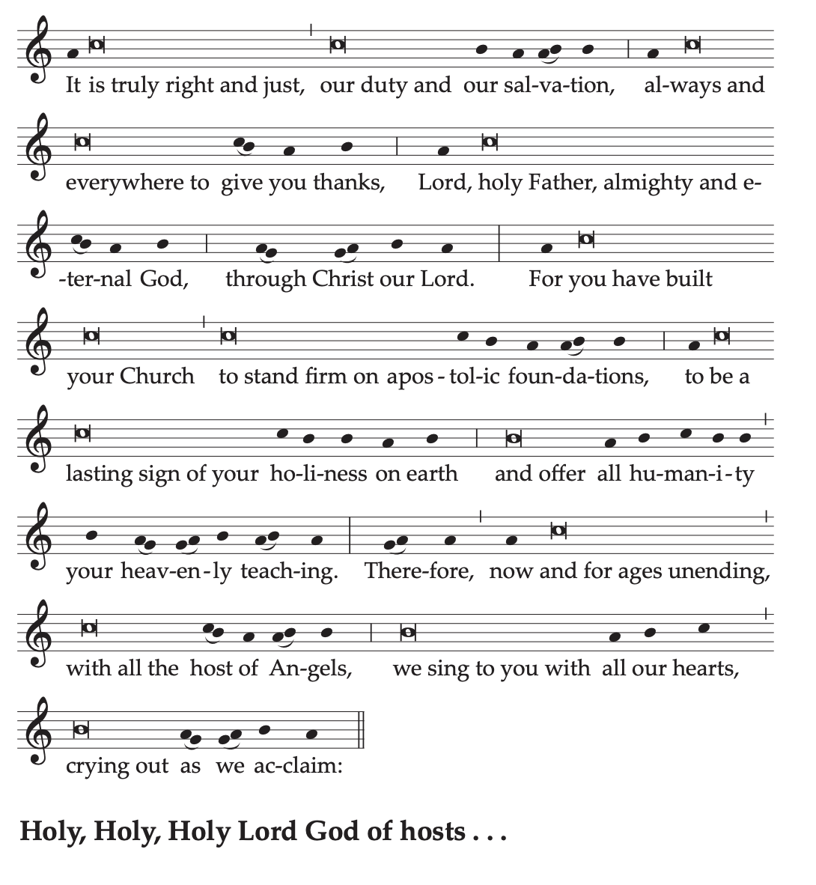
PREFACES OF SAINTS:
Preface I of Saints: The glory of the Saints
Preface II of Saints: The action of the Saints
PREFACE I OF SAINTS
The glory of the Saints
66. The following Preface is said in Masses of All Saints, of Patron Saints and of Saints who are Titulars of a church, and on Solemnities and Feasts of Saints, unless a proper Preface is to be said. This Preface may be said also on Memorials of Saints.
It is truly right and just, our duty and our salvation,
always and everywhere to give you thanks,
Lord, holy Father, almighty and eternal God.
For you are praised in the company of your Saints
and, in crowning their merits, you crown your own gifts.
By their way of life you offer us an example,
by communion with them you give us companionship,
by their intercession, sure support,
so that, encouraged by so great a cloud of witnesses,
we may run as victors in the race before us
and win with them the imperishable crown of glory,
through Christ our Lord.
And so, with the Angels and Archangels,
and with the great multitude of the Saints,
we sing the hymn of your praise,
as without end we acclaim:
Holy, Holy, Holy Lord God of Hosts...
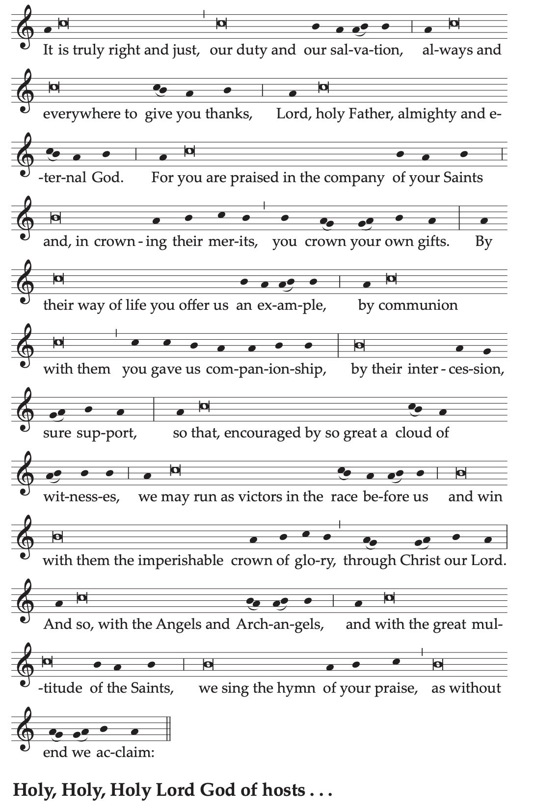
PREFACE II OF SAINTS
The action of the Saints
67. The following Preface is said in Masses of All Saints, of Patron Saints and of Saints who are Titulars of a church, and on Solemnities and Feasts of Saints, unless a proper Preface is to be said. This Preface may be said also on Memorials of Saints.
It is truly right and just, our duty and our salvation,
always and everywhere to give you thanks,
Lord, holy Father, almighty and eternal God,
through Christ our Lord.
For in the marvelous confession of your Saints,
you make your Church fruitful with strength ever new
and offer us sure signs of your love.
And that your saving mysteries may be fulfilled,
their great example lends us courage,
their fervent prayers sustain us in all we do.
And so, Lord, with all the Angels and Saints,
we, too, give you thanks, as in exultation we acclaim:
Holy, Holy, Holy Lord God of Hosts...
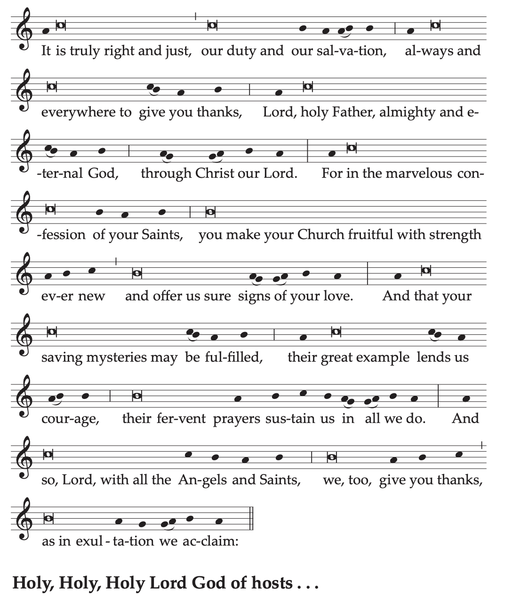
PREFACES OF HOLY MARTYRS:
Preface I of Holy Martyrs: The sign and example of martyrdom
Preface II of Holy Martyrs: The wonders of God in the victory of the Martyrs
PREFACE I OF HOLY MARTYRS
The sign and example of martyrdom
68. The following Preface is said on the Solemnities and Feasts of Holy Martyrs. It may also be said on their Memorials.
It is truly right and just, our duty and our salvation,
always and everywhere to give you thanks,
Lord, holy Father, almighty and eternal God.
For the blood of your blessed Martyr N.,
poured out like Christ’s to glorify your name,
shows forth your marvelous works,
by which in our weakness you perfect your power
and on the feeble bestow strength to bear you witness,
through Christ our Lord.
And so, with the Powers of heaven,
we worship you constantly on earth,
and before your majesty
without end we acclaim:
Holy, Holy, Holy Lord God of Hosts...
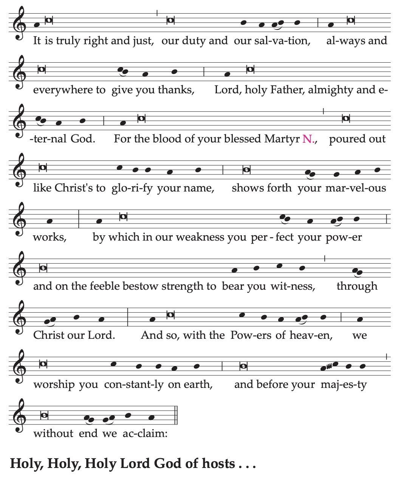
PREFACE II OF HOLY MARTYRS
The wonders of God in the victory of the Martyrs
69. The following Preface is said on the Solemnities and Feasts of Holy Martyrs. It may also be said on their Memorials.
It is truly right and just, our duty and our salvation,
always and everywhere to give you thanks,
Lord, holy Father, almighty and eternal God.
For you are glorified when your Saints are praised;
their very sufferings are but wonders of your might:
in your mercy you give ardor to their faith,
to their endurance you grant firm resolve,
and in their struggle the victory is yours,
through Christ our Lord.
Therefore, all creatures of heaven and earth
sing a new song in adoration,
and we, with all the host of Angels,
cry out, and without end we acclaim:
Holy, Holy, Holy Lord God of Hosts...
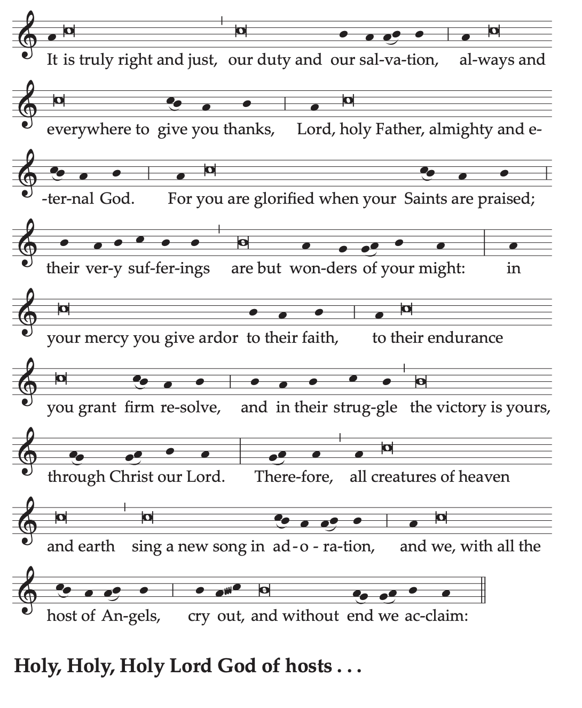
PREFACE OF HOLY PASTORS
The presence of holy Pastors in the Church
70. The following Preface is said on the Solemnities and Feasts of Holy Pastors. It may also be said on their Memorials.
It is truly right and just, our duty and our salvation,
always and everywhere to give you thanks,
Lord, holy Father, almighty and eternal God,
through Christ our Lord.
For, as on the festival of Saint N. you bid your Church rejoice,
so, too, you strengthen her by the example of his holy life,
teach her by his words of preaching,
and keep her safe in answer to his prayers.
And so, with the company of Angels and Saints,
we sing the hymn of your praise,
as without end we acclaim:
Holy, Holy, Holy Lord God of Hosts...
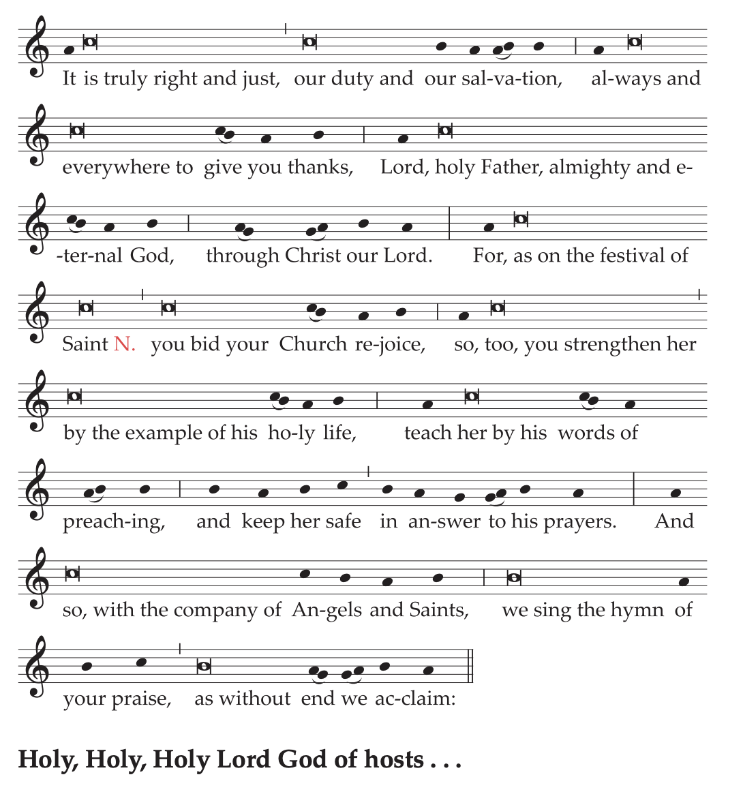
PREFACE OF HOLY VIRGINS AND RELIGIOUS
The sign of a life consecrated to God
71. The following Preface is said on the Solemnities and Feasts of Holy Virgins and Religious. It may also be said on their Memorials.
It is truly right and just, our duty and our salvation,
always and everywhere to give you thanks,
Lord, holy Father, almighty and eternal God.
For in the Saints who consecrated themselves to Christ
for the sake of the Kingdom of Heaven,
it is right to celebrate the wonders of your providence,
by which you call human nature back to its original holiness
and bring it to experience on this earth
the gifts you promise in the new world to come.
And so, with all the Angels and Saints,
we praise you, as without end we acclaim:
Holy, Holy, Holy Lord God of Hosts...
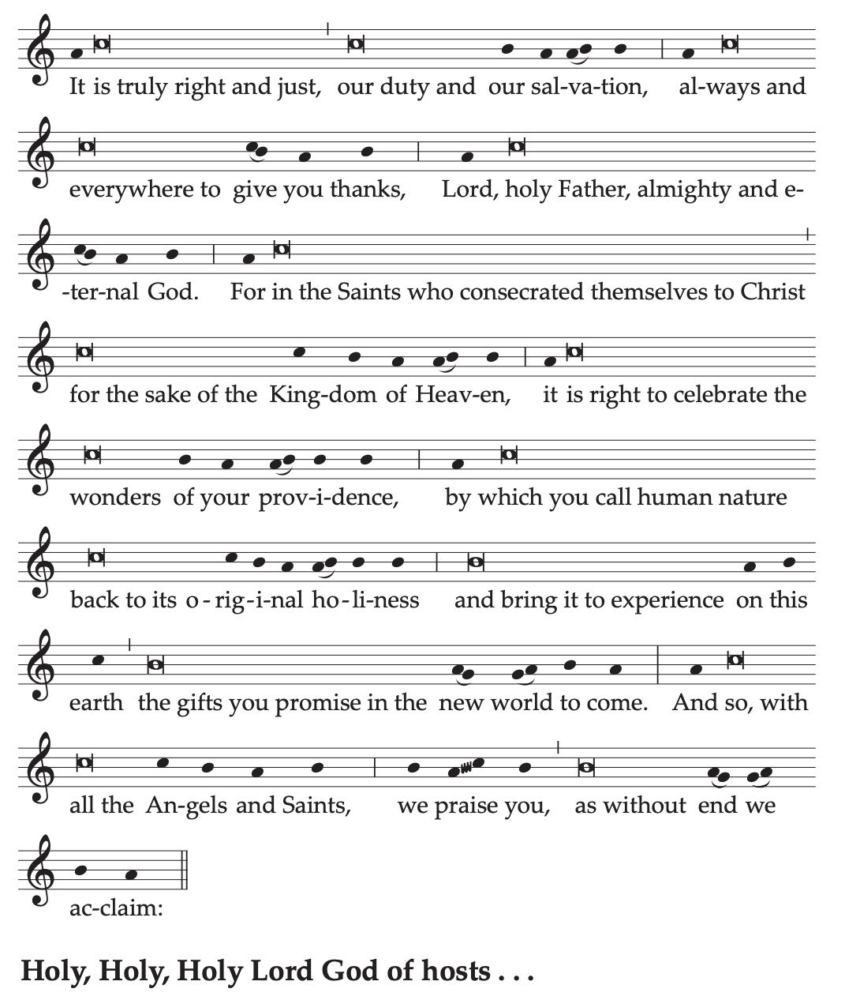
COMMON PREFACES:
Common Preface I: The renewal of all things in Christ
Common Preface II: Salvation through Christ
Common Preface III: Praise to God for the creation and restoration of the human race
Common Preface IV: Praise, the gift of God
Common Preface V: The proclamation of the mystery of Christ
Common Preface VI: The mystery of salvation in Christ
COMMON PREFACE I
The renewal of all things in Christ
72. The following Preface is said in Masses that have no proper Preface, and for which a Preface related to a specific liturgical time is not indicated.
It is truly right and just, our duty and our salvation,
always and everywhere to give you thanks,
Lord, holy Father, almighty and eternal God,
through Christ our Lord.
In him you have been pleased to renew all things,
giving us all a share in his fullness.
For though he was in the form of God, he emptied himself
and by the blood of his Cross brought peace to all creation.
Therefore he has been exalted above all things,
and to all who obey him,
has become the source of eternal salvation.
And so, with Angels and Archangels,
with Thrones and Dominions,
and with all the hosts and Powers of heaven,
we sing the hymn of your glory,
as without end we acclaim:
Holy, Holy, Holy Lord God of Hosts...
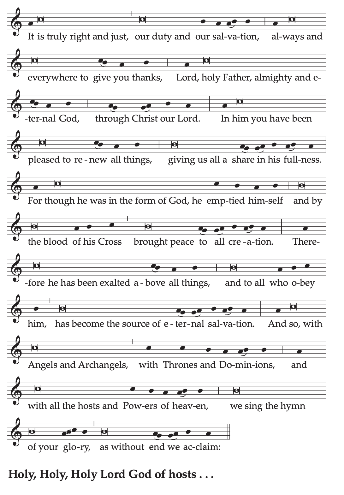
COMMON PREFACE II
Salvation through Christ
73. The following Preface is said in Masses that have no proper Preface, and for which a Preface related to a specific liturgical time is not indicated.
It is truly right and just, our duty and our salvation,
always and everywhere to give you thanks,
Lord, holy Father, almighty and eternal God.
For in goodness you created man
and, when he was justly condemned,
in mercy you redeemed him,
through Christ our Lord.
And so, with Angels and Archangels,
with Thrones and Dominions,
and with all the hosts and Powers of heaven,
we sing the hymn of your glory,
as without end we acclaim:
Holy, Holy, Holy Lord God of Hosts...
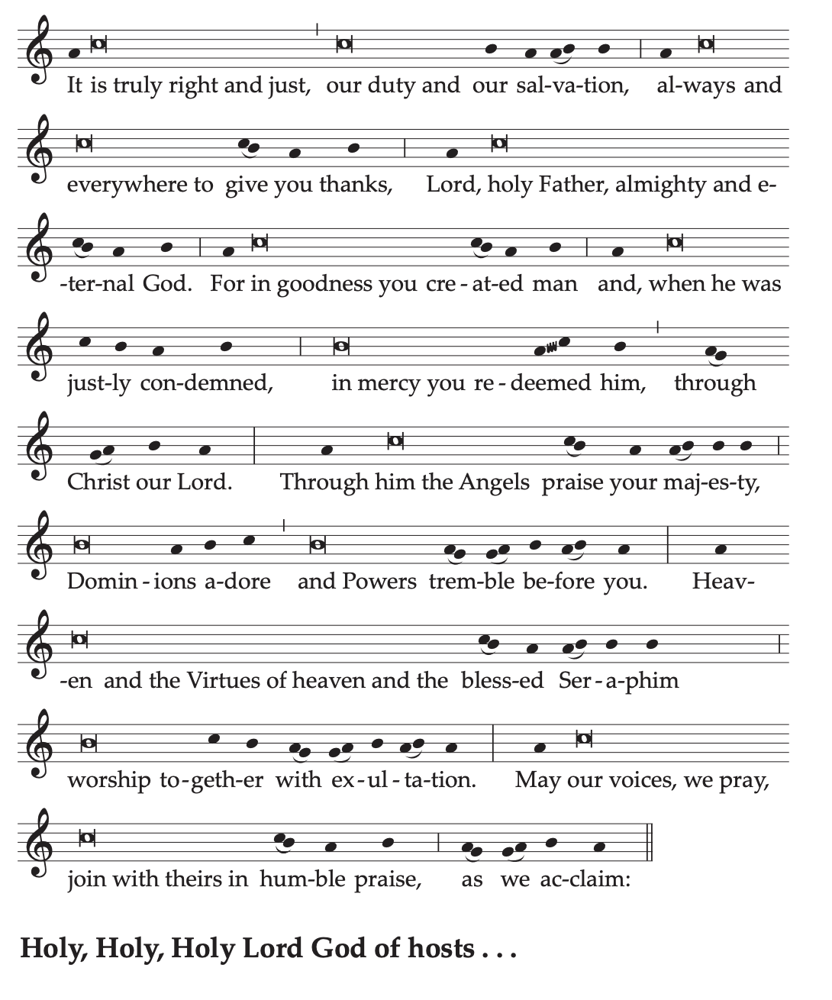
COMMON PREFACE III
Praise to God for the creation and restoration of the human race
74. The following Preface is said in Masses that have no proper Preface, and for which a Preface related to a specific liturgical time is not indicated.
It is truly right and just, our duty and our salvation,
always and everywhere to give you thanks,
Lord, holy Father, almighty and eternal God.
For just as through your beloved Son
you created the human race,
so also through him
with great goodness you formed it anew.
And so it is right that all your creatures serve you,
all the redeemed praise you,
and all your Saints with one heart bless you.
Therefore, we, too, extol you with all the Angels,
as in joyful celebration we acclaim:
Holy, Holy, Holy Lord God of Hosts...
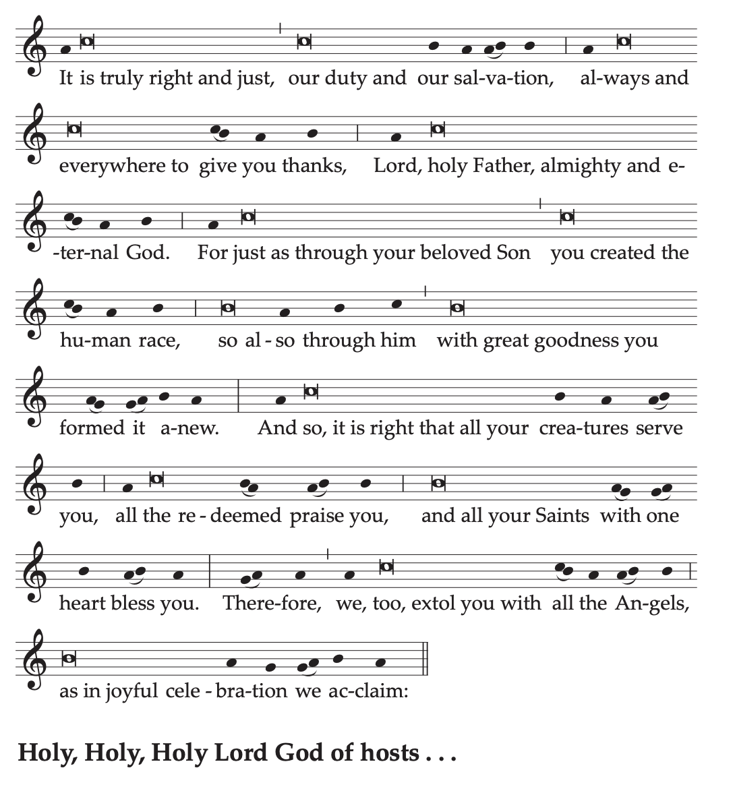
COMMON PREFACE IV
Praise, the gift of God
75. The following Preface is said in Masses that have no proper Preface, and for which a Preface related to a specific liturgical time is not indicated.
It is truly right and just, our duty and our salvation,
always and everywhere to give you thanks,
Lord, holy Father, almighty and eternal God.
For, although you have no need of our praise,
yet our thanksgiving is itself your gift,
since our praises add nothing to your greatness
but profit us for salvation
through Christ our Lord.
And so, in company with the choirs of Angels,
we praise you, and with joy we proclaim:
Holy, Holy, Holy Lord God of Hosts...
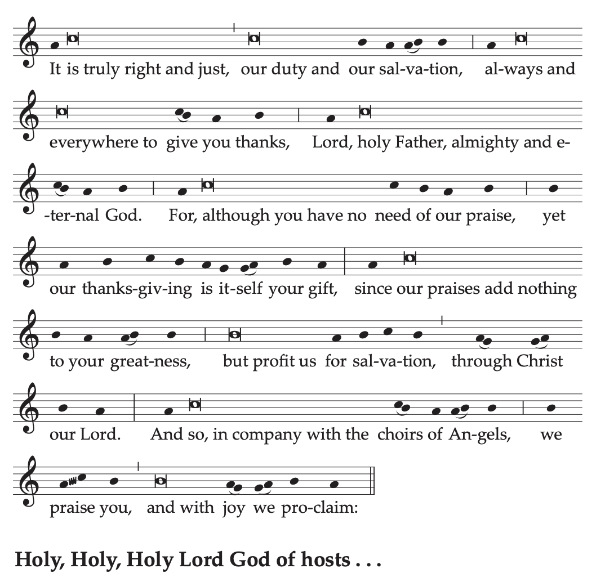
COMMON PREFACE V
The proclamation of the mystery of Christ
76. The following Preface is said in Masses that have no proper Preface, and for which a Preface related to a specific liturgical time is not indicated.
It is truly right and just, our duty and our salvation,
always and everywhere to give you thanks,
Lord, holy Father, almighty and eternal God,
through Christ our Lord.
His Death we celebrate in love,
his Resurrection we confess with living faith,
and his Coming in glory we await with unwavering hope.
And so, with all the Angels and Saints,
we praise you, as without end we acclaim:
Holy, Holy, Holy Lord God of Hosts...
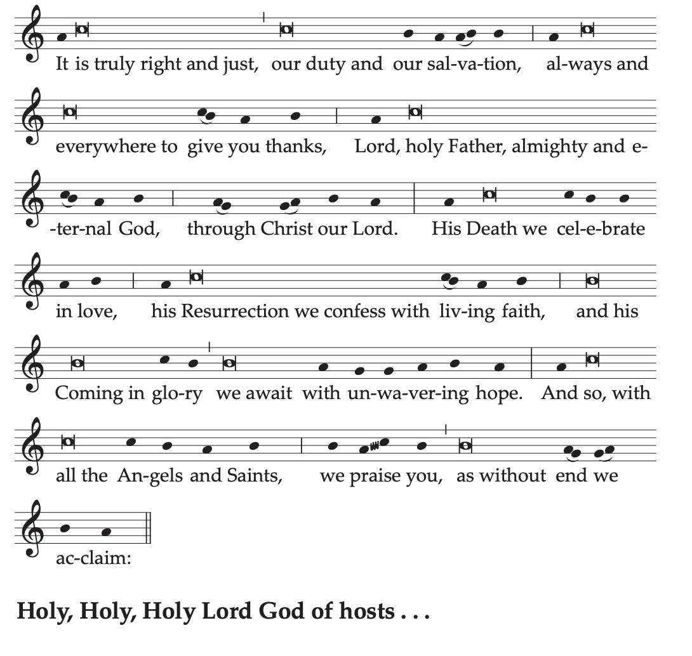
COMMON PREFACE VI
The mystery of salvation in Christ
77. The following Preface is said in Masses that have no proper Preface, and for which a Preface related to a specific liturgical time is not indicated.
It is truly right and just, our duty and our salvation,
always and everywhere to give you thanks, Father most holy,
through your Beloved Son, Jesus Christ,
your Word through whom you made all things,
whom you sent as our Savior and Redeemer,
incarnate by the Holy Spirit and born of the Virgin.
Fulfilling your will and gaining for you a holy people,
he stretched our his hands as he endured his Passion,
so as to break the bonds of death and manifest the resurrection.
And so, with the Angels and all the Saints,
we declare your glory,
as with one voice we acclaim:
Holy, Holy, Holy Lord God of Hosts...
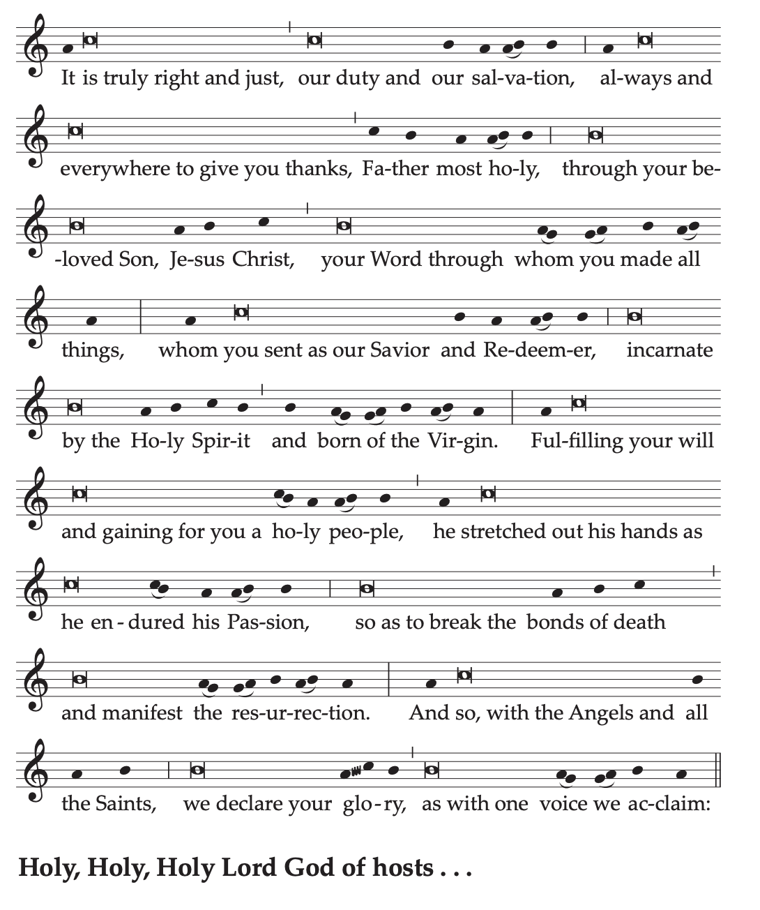
PREFACES FOR THE DEAD:
Preface I for the Dead: The hope of resurrection in Christ
Preface II for the Dead: Christ died so that we might live
Preface III for the Dead: Christ, the salvation and the life
Preface IV for the Dead: From earthly life to heavenly glory
Preface V for the Dead: Our resurrection through the victory of Christ
PREFACE I FOR THE DEAD
The hope of resurrection in Christ
78. The following Preface is said in Masses for the Dead.
It is truly right and just, our duty and our salvation,
always and everywhere to give you thanks,
Lord, holy Father, almighty and eternal God,
through Christ our Lord.
In him the hope of blessed resurrection has dawned,
that those saddened by the certainty of dying
might be consoled by the promise of immortality to come.
Indeed for your faithful, Lord,
life is changed not ended,
and, when this earthly dwelling turns to dust,
an eternal dwelling is made ready for them in heaven.
And so, with Angels and Archangels,
with Thrones and Dominions,
and with all the hosts and Powers of heaven,
we sing the hymn of your glory,
as without end we acclaim:
Holy, Holy, Holy Lord God of Hosts...
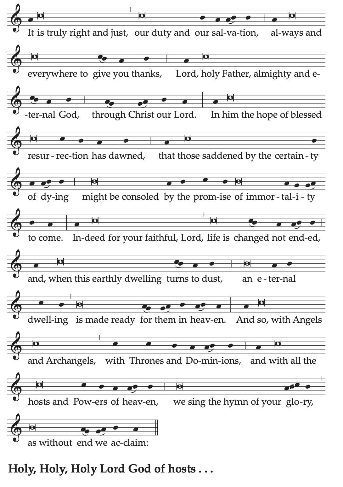
PREFACE II FOR THE DEAD
Christ died so that we might live
79. The following Preface is said in Masses for the Dead.
It is truly right and just, our duty and our salvation,
always and everywhere to give you thanks,
Lord, holy Father, almighty and eternal God,
through Christ our Lord.
For as one alone he accepted death,
so that we might all escape from dying;
as one man he chose to die,
so that in your sight we all might live for ever.
And so, in company with the choirs of Angels,
we praise you, and with joy we proclaim:
Holy, Holy, Holy Lord God of Hosts...
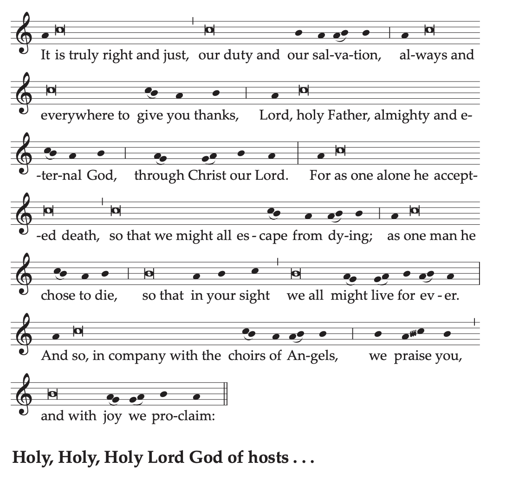
PREFACE III FOR THE DEAD
Christ, the salvation and the life
80. The following Preface is said in Masses for the Dead.
It is truly right and just, our duty and our salvation,
always and everywhere to give you thanks,
Lord, holy Father, almighty and eternal God,
through Christ our Lord.
For he is the salvation of the world,
the life of the human race,
the resurrection of the dead.
Through him the host of Angels adores your majesty
and rejoices in your presence for ever.
May our voices, we pray, join with theirs
in one chorus of exultant praise, as we acclaim:
Holy, Holy, Holy Lord God of Hosts...
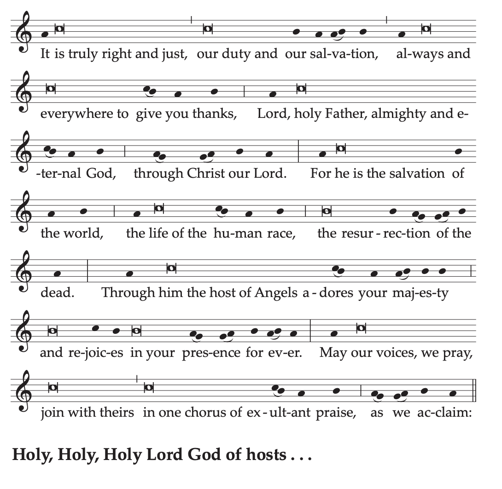
PREFACE IV FOR THE DEAD
From earthly life to heavenly glory
81. The following Preface is said in Masses for the Dead.
It is truly right and just, our duty and our salvation,
always and everywhere to give you thanks,
Lord, holy Father, almighty and eternal God.
For it is at your summons that we come to birth,
by your will that we are governed,
and at your command that we return,
on account of sin,
to the earth from which we came.
And when you give the sign,
we who have been redeemed by the Death of your Son,
shall be raised up to the glory of his Resurrection.
And so, with the company of Angels and Saints,
we sing the hymn of your praise,
as without end we acclaim:
Holy, Holy, Holy Lord God of Hosts...
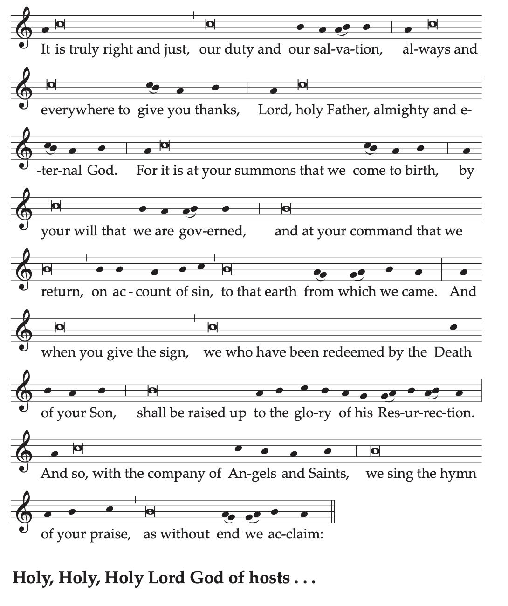
PREFACE V FOR THE DEAD
Our resurrection through the victory of Christ
82. The following Preface is said in Masses for the Dead.
It is truly right and just, our duty and our salvation,
always and everywhere to give you thanks,
Lord, holy Father, almighty and eternal God.
For even though by our own fault we perish,
yet by your compassion and your grace,
when seized by death according to our sins,
we are redeemed through Christ’s great victory,
and with him called back into life.
And so, with the Powers of heaven,
we worship you constantly on earth,
and before your majesty
without end we acclaim:
Holy, Holy, Holy Lord God of Hosts...
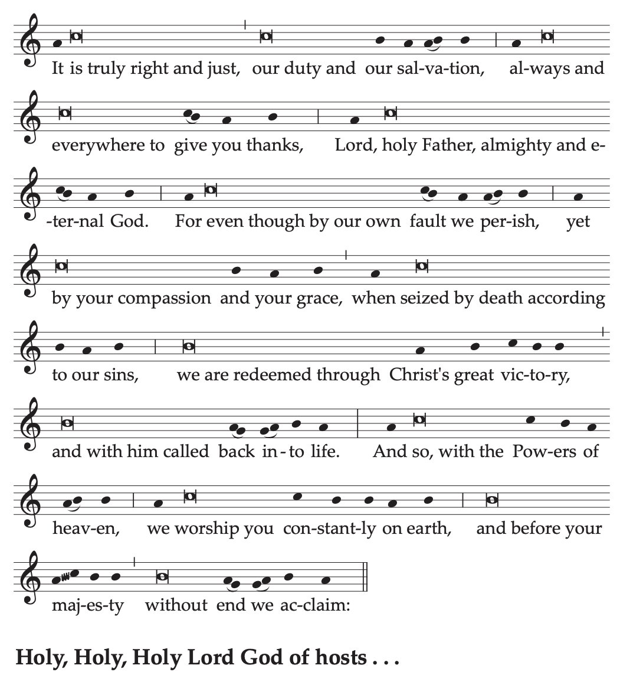